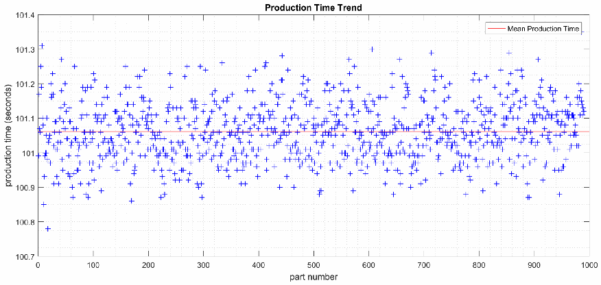
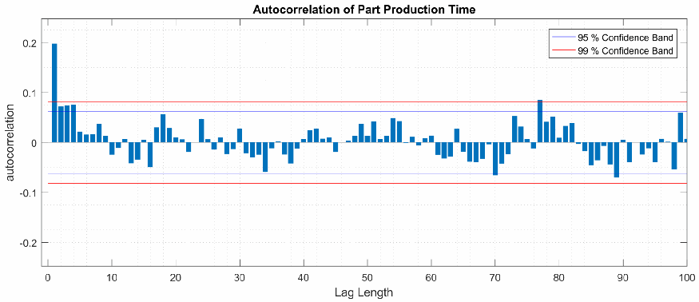
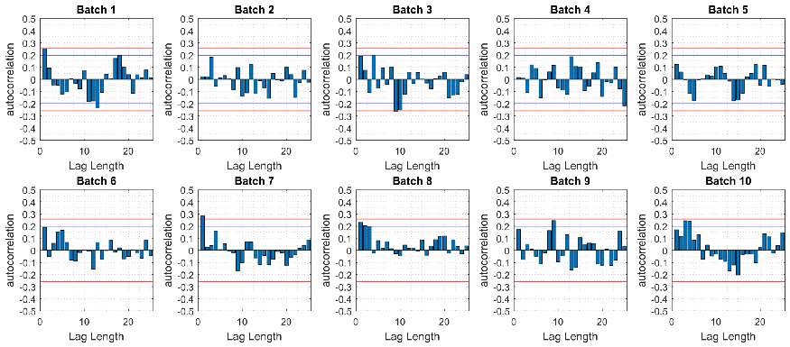

NIST IR 8227 日本語訳
英語タイトル : Manufacturing Profile Implementation Methodology for a Robotic Workcell日本語タイトル : ロボットワークセル向けの製造プロファイル実装方法論
公開日 : 2019-05-22
原文URL : https://csrc.nist.gov/pubs/ir/8227/final
翻訳編集 : 自動生成（有志による非公式の日本語訳）, 原文取得日 : 2026-10-31, 訳文 : 295 / 295 ブロック
[要約] NIST IR 8227 は、協働ロボットシステムを対象に、サイバーセキュリティフレームワーク製造プロファイルの記述を満たす技術的解決策を実装するための方法論を説明する報告書です。NIST が構築した、産業用制御システム（ICS）に対するサイバーセキュリティ技術の性能への影響を測定するテストベッドと、その中の 2 つの製造システムの一つを扱います。本書は、テストベッドの測定システムと、性能への影響を特定するための比較分析の手順を網羅的に検討しています。研究の主要な目標の一つは、製造プロファイルの実装の各構成要素がシステム全体の性能に果たす役割を明らかにすることで、本書では比較分析の例とワークセルの特性評価も示しています。
NISTIR 8227
NISTIR 8227
Manufacturing Profile Implementation Methodology for a Robotic Workcell
ロボットワークセル向けの製造プロファイル実装方法論
Timothy A. Zimmerman
Timothy A. Zimmerman
This publication is available free of charge from: https://doi.org/10.6028/NIST.IR.8227
この刊行物は次のURLから無料で入手できます: https://doi.org/10.6028/NIST.IR.8227
NISTIR 8227
NISTIR 8227
Manufacturing Profile Implementation Methodology for a Robotic Workcell
ロボットワークセル向けの製造プロファイル実装方法論
Timothy A. Zimmerman Intelligent Systems Division Engineering Laboratory
Timothy A. Zimmerman 国立標準技術研究所 Intelligent Systems Division Engineering Laboratory
This publication is available free of charge from: https://doi.org/10.6028/NIST.IR.8227
この刊行物は次のURLから無料で入手できます: https://doi.org/10.6028/NIST.IR.8227
May 2019
2019年5月
U.S. Department of Commerce Wilbur L. Ross, Jr., Secretary
米国商務省 Wilbur L. Ross, Jr. 長官
National Institute of Standards and Technology
国立標準技術研究所
Walter Copan, NIST Director and Undersecretary of Commerce for Standards and Technology
Walter Copan、NIST 所長兼商務次官（標準・技術担当）
Certain commercial entities, equipment, or materials may be identified in this document in order to describe an experimental procedure or concept adequately. Such identification is not intended to imply recommendation or endorsement by the National Institute of Standards and Technology, nor is it intended to imply that the entities, materials, or equipment are necessarily the best available for the purpose.
実験の手順や概念を十分に説明するために、この文書では特定の商業団体、機器、または材料を挙げている場合があります。こうした記載は、National Institute of Standards and Technology による推奨や支持を意味するものではなく、挙げられた団体、材料、機器がその目的に利用可能なものの中で必ずしも最良であることを意味するものでもありません。
National Institute of Standards and Technology Interagency or Internal Report 8227 Natl. Inst. Stand. Technol. Interag. Intern. Rep. 8227, 41 pages (May 2019)
国立標準技術研究所 省庁間・内部報告書 8227 Natl. Inst. Stand. Technol. Interag. Intern. Rep. 8227, 41 ページ（2019年5月）
This publication is available free of charge from: https://doi.org/10.6028/NIST.IR.8227
この刊行物は次のURLから無料で入手できます: https://doi.org/10.6028/NIST.IR.8227
Abstract
概要
The National Institute of Standards and Technology has constructed a testbed to measure the performance impact of cybersecurity technologies on Industrial Control Systems (ICS). The testbed was chosen to support the implementation of the Cybersecurity Framework Manufacturing Profile: a voluntary, risk-based approach for managing cybersecurity activities and reducing cyber risk to manufacturing systems. This report focuses on the Collaborative Robotics System, one of the two manufacturing systems within the testbed. A methodology for implementation of technical solutions to meet the Profile language is described, as well as a comprehensive review of the testbed measurement systems, and the comparative analysis procedures used for identifying performance impacts. Finally, an example comparative analysis is performed and the characterization of the workcell is discussed.
国立標準技術研究所は、産業用制御システム（ICS）に対するサイバーセキュリティ技術の性能への影響を測定するためのテストベッドを構築しました。このテストベッドは、製造システムのサイバーセキュリティ活動を管理し、サイバーリスクを低減するための、自主的でリスクに基づくアプローチであるサイバーセキュリティフレームワーク製造プロファイルの実装を支援するために構築されました。本報告書は、テストベッド内の 2 つの製造システムのうちの 1 つである協働ロボットシステムに焦点を当てています。プロファイルの記述を満たす技術的解決策を実装するための方法論を説明するとともに、テストベッドの測定システムを網羅的に検討し、性能への影響を特定するために用いる比較分析の手順について説明します。最後に、比較分析の例を実施し、ワークセルの特性評価について論じます。
Key words
キーワード
cybersecurity; robotics; manufacturing; performance; industrial control system; PLC; measurement methodology; testbed; workcell.
cybersecurity; robotics; manufacturing; performance; industrial control system; PLC; measurement methodology; testbed; workcell.
Disclaimer
免責事項
Certain commercial entities, equipment, or materials may be identified in this document in order to describe an experimental procedure or concept adequately. Such identification is not intended to imply recommendation or endorsement by NIST, nor is it intended to imply that the entities, materials, or equipment are necessarily the best available for the purpose.
実験の手順や概念を十分に説明するために、この文書では特定の商業団体、機器、または材料を挙げている場合があります。こうした記載は、NIST による推奨や支持を意味するものではなく、挙げられた団体、材料、機器がその目的に利用可能なものの中で必ずしも最良であることを意味するものでもありません。
Table of Contents
目次
Appendix C: Part Production Time Data
付録 C: 部品生産時間データ
List of Tables
表の一覧
List of Figures
図の一覧
1. Introduction
1. はじめに
The National Institute of Standards and Technology (NIST) has developed a voluntary, risk-based approach for managing cybersecurity activities and reducing cyber risk to manufacturing systems, called the Cybersecurity Framework Manufacturing Profile [1]. Concurrently, NIST constructed the Cybersecurity for Smart Manufacturing Systems (CSMS) testbed to measure the performance impact of cybersecurity technologies on industrial control systems (ICS) [2]. The Manufacturing Profile will be implemented into the testbed to validate the outlined approach, and to measure performance impacts realized after cybersecurity tools and technologies are installed in the testbed’s manufacturing systems.
National Institute of Standards and Technology（NIST）は、製造システムのサイバーセキュリティ活動を管理し、サイバーリスクを低減するための、自主的でリスクに基づくアプローチとして、Cybersecurity Framework Manufacturing Profile [1] を策定しました。これと並行して、NIST は、産業用制御システム（ICS）に対するサイバーセキュリティ技術の性能への影響を測定するために、Cybersecurity for Smart Manufacturing Systems（CSMS）テストベッド [2] を構築しました。製造プロファイルは、示されたアプローチを検証し、テストベッドの製造システムにサイバーセキュリティのツールや技術を導入した後に生じる性能への影響を測定するために、テストベッドに実装される予定です。
A major goal of this research is to determine the role each component of the Manufacturing Profile implementation contributes to the overall system performance. To meet the research goals, a robust methodology for experimentation was developed, including a characterization procedure and comparative analysis methods for identifying and quantifying performance impacts to the manufacturing system.
この研究の主な目標は、製造プロファイルの実装の各構成要素が、システム全体の性能にどの程度寄与するかを明らかにすることです。研究目標を達成するため、製造システムへの性能の影響を特定し定量化するための特性評価の手順と比較分析の方法を含む、堅牢な実験の方法論を開発しました。
2. Cybersecurity for Smart Manufacturing Systems Testbed
2. スマート製造システムのサイバーセキュリティ・テストベッド
The Manufacturing Profile implementation will be performed on the Cybersecurity for Smart Manufacturing Systems testbed [2], located at the NIST campus in Gaithersburg, Maryland. The testbed contains two manufacturing systems: the Collaborative Robotics System (CRS) [3], and the Process Control System (PCS) [4]. The CRS is a discrete manufacturing process, while the PCS is a continuous manufacturing process. This report focuses specifically on the Collaborative Robotics System.
製造プロファイルの実装は、メリーランド州ゲイザースバーグにある NIST のキャンパスに設置された Cybersecurity for Smart Manufacturing Systems テストベッド [2] で行います。このテストベッドには、協働ロボットシステム（CRS）[3] とプロセス制御システム（PCS）[4] という 2 つの製造システムがあります。CRS は離散型の製造プロセスであり、PCS は連続型の製造プロセスです。本報告書は、特に協働ロボットシステムに焦点を当てます。
The CRS workcell, shown in Figure 1, contains two robotic arms that perform a material handling process called machine tending [3]. Robotic machine tending utilizes robots to interact with machinery, performing physical operations a human operator would normally perform (e.g., loading and unloading of parts in a machine, opening and closing of machine doors, interacting with the operator control panel, etc.). A human operator interfaces with the workcell through a human-machine interface (HMI) and a control panel external to the work area.
図 1 に示す CRS ワークセルには、マシンテンディングと呼ばれる資材搬送プロセス [3] を行う 2 台のロボットアームがあります。ロボットによるマシンテンディングでは、ロボットが機械とやり取りし、人間のオペレーターが通常行う物理的な作業（たとえば、機械への部品の搬入と搬出、機械の扉の開閉、オペレーター用制御盤の操作など）を行います。人間のオペレーターは、ヒューマンマシンインターフェース（HMI）と、作業エリアの外にある制御盤を介してワークセルとやり取りします。
The workcell was designed and constructed to be reconfigurable, allowing numerous types of operational methodologies, network topologies, and industrial networking protocols to be investigated. The two robots collaborate to transport parts through the manufacturing process, as a single robot cannot physically reach all four stations, and having two robots increases workcell efficiency.
このワークセルは再構成可能なように設計・構築されており、さまざまな種類の運用方法論、ネットワークトポロジー、産業用ネットワークプロトコルを調査できます。1 台のロボットでは 4 つのステーションすべてに物理的に届かず、また 2 台のロボットを用いるとワークセルの効率が高まるため、2 台のロボットが協働して製造プロセスの中で部品を搬送します。
Parts are moved by the robot arms through four simulated machining operations, known as stations. Each station is comprised of: a fixture for holding the part, an infrared proximity sensor for detecting the part, a single board computer simulating the actions and communications of a typical machining center, and a liquid crystal display (LCD) for displaying the operational status of the station. The stations communicate with the supervisory programmable logic controller (PLC) over the workcell’s local area network (LAN).
部品は、ロボットアームによって、ステーションと呼ばれる 4 つの模擬機械加工工程を経て移動します。各ステーションは、部品を保持する治具、部品を検出する赤外線近接センサー、典型的なマシニングセンターの動作と通信を模擬するシングルボードコンピューター、ステーションの動作状況を表示する液晶ディスプレイ（LCD）で構成されます。各ステーションは、ワークセルのローカルエリアネットワーク（LAN）を介して、監視用のプログラマブルロジックコントローラー（PLC）と通信します。
![Photograph of the CRS workcell in standby. Inside an aluminum-frame enclosure on a perforated optical table stand two orange robotic arms, one on the left and one on the right half of the table. Four machining stations with small blue LCD displays sit at the corners of the work area (two on each side), and a row of white ball-shaped parts lies on the table between the robots. Yellow safety light curtains stand at the left and right front posts. At the top center hangs the operator control panel with colored labeled buttons and red, green, and black indicator lights. A whiteboard is partly visible at the upper right in the background.](assets/ir-8227/p0009-figure-01.png)
CRS のワークセルが待機状態にある様子の写真です。穴あきの定盤の上にアルミフレームの囲いがあり、その中の左右にオレンジ色のロボットアームが2台立っています。作業領域の四隅（左右に2台ずつ）には小型の青い LCD 表示器の付いた4台の加工ステーションがあり、ロボットの間の台上には白い球状の部品が1列に並んでいます。前面の左右の支柱には黄色の安全ライトカーテンがあります。上部中央には、ラベル付きの色分けされたボタンと赤・緑・黒の表示灯を備えたオペレーター制御盤が吊り下げられています。右上の背景にはホワイトボードの一部が見えます。
Fig. 1. The CRS workcell in standby, waiting for the operator to initiate the manufacturing process. The operator control panel is visible at the top of the figure.
図 1. 待機状態にある CRS ワークセル。オペレーターが製造プロセスを開始するのを待っています。図の上部にオペレーター用制御盤が見えます。
The supervisory PLC monitors and controls all aspects of the manufacturing process. Manufacturing data from the four machining stations are used by the PLC to determine which operations (known as jobs) the robots must perform to keep the parts moving through the sequential manufacturing process. The PLC also communicates with the HMI for operator visibility and control.
監視用 PLC は、製造プロセスのあらゆる側面を監視し制御します。PLC は、4 つの機械加工ステーションからの製造データを用いて、部品が順次の製造プロセスを進み続けるようにするために、ロボットが行わなければならない作業（ジョブと呼ばれます）を決定します。PLC は、オペレーターによる可視化と制御のために HMI とも通信します。
The workcell is supported by a shared infrastructure of networked servers, measurement tools, and other technologies. The infrastructure is used for many research functions including: testing, deployment, and hosting of cybersecurity tools; measurement systems for network traffic; creation and manipulation of network traffic for inducing anomalous network activity; and archival storage of experiment data. A virtualized server infrastructure was installed to support the numerous cybersecurity technologies and tools required for the implementation.
ワークセルは、ネットワーク接続されたサーバー、測定ツール、その他の技術からなる共有インフラストラクチャによって支えられています。このインフラストラクチャは、サイバーセキュリティツールのテスト、展開、ホスティング、ネットワークトラフィックの測定システム、異常なネットワーク活動を誘発するためのネットワークトラフィックの作成と操作、実験データのアーカイブ保存など、多くの研究機能に使われます。実装に必要な多数のサイバーセキュリティ技術やツールを支えるため、仮想化したサーバーインフラストラクチャを設置しました。
3. Manufacturing Profile
3. 製造プロファイル
A major milestone of the Cybersecurity for Smart Manufacturing Systems project at NIST was the creation of the Manufacturing Profile [1]. The Manufacturing Profile provides a roadmap and actionable guidance for implementing the Cybersecurity Framework within a manufacturing environment. The prescribed methodology can be used to identify gaps in cybersecurity posture (when paired with a “current profile”), and addresses each gap with actionable language derived from industry-specific standards, guidelines, and best practices.
NIST の Cybersecurity for Smart Manufacturing Systems プロジェクトにおける大きなマイルストーンは、製造プロファイル [1] の作成でした。製造プロファイルは、製造環境内で Cybersecurity Framework を実装するためのロードマップと実行可能なガイダンスを提供します。示された方法論は、（「現在のプロファイル」と組み合わせることで）サイバーセキュリティ態勢のギャップを特定するために使用でき、各ギャップには、業界固有の標準、ガイドライン、ベストプラクティスから導いた実行可能な記述で対処します。
As with many documents relating to the cybersecurity of manufacturing systems, the Manufacturing Profile does not attempt to identify potential performance impacts that may be realized once a cybersecurity solution is installed. Implementing prescribed cybersecurity technologies and tools without affecting ICS performance is a challenge. Impacts to the manufacturing system can be difficult to predict, and differ between manufacturing processes due to a wide spectrum of manufacturing processes, operating procedures, control schemes, industrial hardware, software, industrial protocols, and network topologies.
製造システムのサイバーセキュリティに関する多くの文書と同様に、製造プロファイルは、サイバーセキュリティ対策を導入した後に生じうる性能への影響を特定しようとはしていません。規定されたサイバーセキュリティ技術やツールを、ICS の性能に影響を与えずに実装することは困難です。製造システムへの影響は予測が難しく、製造プロセス、運用手順、制御方式、産業用ハードウェア、ソフトウェア、産業用プロトコル、ネットワークトポロジーが多岐にわたるため、製造プロセスごとに異なります。
Meeting the Manufacturing Profile language will involve sourcing and procuring cybersecurity tools, reconfiguration of existing workcell systems, and instituting organizational policies and procedures. Detailed information describing the installation, configuration, operation, and financial cost of each tool will be recorded during the implementation.
製造プロファイルの記述を満たすには、サイバーセキュリティツールの調達、既存のワークセルシステムの再構成、組織のポリシーと手順の整備が必要になります。各ツールの導入、構成、運用、財務的コストを説明する詳細な情報は、実装の過程で記録します。
3.1 Security Levels
3.1 セキュリティレベル
The Manufacturing Profile identifies three Security Levels that categorize the potential impact a manufacturer may realize if the manufacturing system is compromised by a cybersecurity incident: low, moderate, and high. Examples of how each security level aligns with business objectives are shown in Table 1.
製造プロファイルは、サイバーセキュリティインシデントによって製造システムが危殆化した場合に製造者が被りうる影響を分類する、低・中・高の 3 つのセキュリティレベルを定めています。各セキュリティレベルが事業目標とどのように対応するかの例を表 1 に示します。
The implementation of each security level within the workcell is performed independently, each with a specific manufacturing use case that is representative of the chosen security level. A use case describes a hypothetical manufacturer and all of the operational details required to inform the Manufacturing Profile implementation process. Use cases are further discussed in Section 4.2.
ワークセル内での各セキュリティレベルの実装は、選んだセキュリティレベルを代表する個別の製造ユースケースに基づいて、レベルごとに独立して行います。ユースケースは、仮想の製造者と、製造プロファイルの実装プロセスに必要なすべての運用の詳細を記述したものです。ユースケースについては 4.2 節でさらに論じます。
The security levels will be implemented in sequential order from the low security level to the high security level to measure the performance impact each has on the system. As the security level increases, some of the cybersecurity tools previously implemented for the lower-security level may be reconfigured to meet the language of the higher level.
セキュリティレベルは、各レベルがシステムに与える性能への影響を測定するため、低セキュリティレベルから高セキュリティレベルへ順に実装します。セキュリティレベルが上がるにつれて、下位のセキュリティレベル向けに先に実装したサイバーセキュリティツールの一部は、上位レベルの記述を満たすよう再構成される場合があります。
Table 1. Manufacturing system impact levels from the Manufacturing Profile.
表 1. 製造プロファイルにおける製造システムの影響度レベル。
| Impact Category | Low Impact | Moderate Impact | High Impact |
|---|---|---|---|
| Injury | Cuts, bruises requiring first aid | Requires hospitalization | Loss of life or limb |
| Financial Loss ($) | Tens of thousands | Hundreds of thousands | Millions |
| Environmental release | Temporary damage | Lasting damage | Permanent damage, off-site damage |
| Interruption of production | Minutes | Days | Weeks |
| Public image | Temporary damage | Lasting damage | Permanent damage |
| 影響区分 | 低影響 | 中影響 | 高影響 |
|---|---|---|---|
| 負傷 | 応急処置を要する切り傷、打撲 | 入院を要するもの | 生命または四肢の喪失 |
| 金銭的損失（$） | 数万ドル | 数十万ドル | 数百万ドル |
| 環境への放出 | 一時的な被害 | 長期にわたる被害 | 恒久的な被害、敷地外への被害 |
| 生産の中断 | 数分 | 数日 | 数週間 |
| 社会的イメージ | 一時的な被害 | 長期にわたる被害 | 恒久的な被害 |
4. Implementation of the Manufacturing Profile
4. 製造プロファイルの実装
Meeting the guidance language for each security level can be achieved by implementing technical solutions within the CRS (i.e., cybersecurity tools and technologies). For this research, the language of each subcategory is reviewed by the researchers to determine if a technical solution can be used to meet the subcategory intent. Commercially available technical solutions are then reviewed by the researchers, procured (if the solution meets the language and fits the use case), and finally installed within the workcell as part of the implementation.
各セキュリティレベルのガイダンスの記述を満たすには、CRS 内に技術的解決策（すなわち、サイバーセキュリティのツールや技術）を実装します。この研究では、各サブカテゴリの記述を研究者が確認し、技術的解決策でそのサブカテゴリの意図を満たせるかどうかを判断します。次に、市販の技術的解決策を研究者が検討し、（その解決策が記述を満たし、ユースケースに適合する場合は）調達し、最後に実装の一環としてワークセル内に導入します。
Each of the three Manufacturing Profile security levels (low, moderate, and high) will be implemented and tested on the workcell, starting with the low security level. The technical solutions identified to satisfy each subcategory will be installed in no specific order. The subcategories for the low security level implementation identified as requiring technical solutions are shown in Table 2.
製造プロファイルの 3 つのセキュリティレベル（低、中、高）はそれぞれ、低セキュリティレベルから順に、ワークセル上で実装しテストします。各サブカテゴリを満たすために特定した技術的解決策は、特定の順序なしに導入します。低セキュリティレベルの実装で技術的解決策が必要と特定されたサブカテゴリを表 2 に示します。
Performance measurements will occur after each technical solution is installed. Technical solutions that have multiple modes of operation will be tested for each mode that meets the Manufacturing Profile language, as each mode may affect the manufacturing process differently. All modes of a technical solution selected for performance measurements will be aligned with the requirements of the current security level and its applicability validated against the use case.
性能測定は、技術的解決策を導入するたびに行います。複数の動作モードを持つ技術的解決策は、モードごとに製造プロセスへの影響が異なる可能性があるため、製造プロファイルの記述を満たすモードのそれぞれについてテストします。性能測定の対象に選んだ技術的解決策のすべてのモードを、現在のセキュリティレベルの要件に適合させ、その適用可能性をユースケースに照らして検証します。
After the measurements for a technical solution with multiple modes of operation have been completed, the mode of operation that best meets the Manufacturing Profile language for the current security level, and that has the least impact to the manufacturing process, will be used for the remainder of the security level implementation. A flow chart describing the the implementation methodology is shown below in Figure 2, which includes the three measurement types to be performed, as described in Section 4.1.
複数の動作モードを持つ技術的解決策の測定が完了したら、現在のセキュリティレベルについて製造プロファイルの記述を最もよく満たし、かつ製造プロセスへの影響が最も小さい動作モードを、そのセキュリティレベルの実装の残りの期間を通じて使用します。実装プロセスを示すフローチャートを下の図 2 に示します。このフローチャートには、4.1 節で説明する、実施する 3 種類の測定が含まれています。
Table 2. Low security level Cybersecurity Framework subcategories identified as requiring technical solutions.
表 2. 技術的解決策が必要と特定された、低セキュリティレベルの Cybersecurity Framework サブカテゴリ。
| Identify (ID) | Protect (PR) | Detect (DE) | Respond (RS) |
|---|---|---|---|
| Asset Management ID.AM-1 ID.AM-2 ID.AM-3 ID.AM-4 Risk Assessment ID.RA-1 | Identity Management and Access Control PR.AC-1 PR.AC-2 PR.AC-5 Data Security PR.DS-3 PR.DS-5 Information Protection Processes and Procedures PR.IP-1 PR.IP-2 PR.IP-3 PR.IP-4 PR.IP-6 Maintenance PR.MA-1 PR.MA-2 Protective Technology PR.PT-1 PR.PT-2 PR.PT-3 PR.PT-4 | Anomalies and Events DE.AE-1 DE.AE-2 DE.AE-3 Security Continuous Monitoring DE.CM-1 DE.CM-2 DE.CM-3 DE.CM-4 DE.CM-6 DE.CM-7 DE.CM-8 Detection Processes DE.DP-3 | Analysis RS.AN-3 Mitigation RS.MI-2 RS.MI-3 |
| 識別（ID） | 防御（PR） | 検知（DE） | 対応（RS） |
|---|---|---|---|
| 資産管理 ID.AM-1 ID.AM-2 ID.AM-3 ID.AM-4 リスクアセスメント ID.RA-1 | アイデンティティ管理とアクセス制御 PR.AC-1 PR.AC-2 PR.AC-5 データセキュリティ PR.DS-3 PR.DS-5 情報保護のプロセスおよび手順 PR.IP-1 PR.IP-2 PR.IP-3 PR.IP-4 PR.IP-6 保守 PR.MA-1 PR.MA-2 保護技術 PR.PT-1 PR.PT-2 PR.PT-3 PR.PT-4 | 異常とイベント DE.AE-1 DE.AE-2 DE.AE-3 セキュリティの継続的監視 DE.CM-1 DE.CM-2 DE.CM-3 DE.CM-4 DE.CM-6 DE.CM-7 DE.CM-8 検知プロセス DE.DP-3 | 分析 RS.AN-3 低減 RS.MI-2 RS.MI-3 |
![Flow chart. Start "LOW Security Level" → "Perform Security Level baseline measurements" → decision "Have all tools for Security Level been installed?". If N → decision "Is tool already installed?": if N → "Install tool" → "Configure tool"; if Y → "Configure tool". "Configure tool" → "Perform tool/configuration impact measurements" → decision "Test another configuration?": if Y → back to "Configure tool"; if N → "Configure tool for least-impactful operation" → back to "Have all tools for Security Level been installed?". If Y at that decision → "Perform Security Level impact measurements" → "Increase Security Level (Moderate, High)" → back to "Perform Security Level baseline measurements".](assets/ir-8227/p0013-drawing-01.png)
流れ図です。開始は「LOW Security Level」（低のセキュリティレベル）で、「Perform Security Level baseline measurements」（セキュリティレベルの基準の測定を行う）を経て、判断「Have all tools for Security Level been installed?」（そのセキュリティレベルのツールはすべて導入済みか）に進みます。N（いいえ）なら判断「Is tool already installed?」（ツールは導入済みか）に進み、N なら「Install tool」（ツールを導入する）を経て「Configure tool」（ツールを設定する）に進みます。Y なら「Configure tool」に直接進みます。その後「Perform tool/configuration impact measurements」（ツール・設定の影響の測定を行う）を経て、判断「Test another configuration?」（別の設定を試すか）に進みます。Y なら「Configure tool」に戻り、N なら「Configure tool for least-impactful operation」（影響が最も小さい運用になるようツールを設定する）を経て、「Have all tools for Security Level been installed?」に戻ります。この判断で Y なら「Perform Security Level impact measurements」（セキュリティレベルの影響の測定を行う）を経て「Increase Security Level (Moderate, High)」（セキュリティレベルを上げる〔中、高〕）に進み、「Perform Security Level baseline measurements」に戻ります。
Fig. 2. Flow chart describing the implementation process for all Manufacturing Profile security levels.
図 2. すべての製造プロファイルのセキュリティレベルに共通する実装プロセスを示すフローチャート。
4.1 Performance Measurements
4.1 性能の測定
There are three types of performance measurements that will be performed during the implementation of all three security levels: baseline measurements of the initial workcell performance, impact of individual technologies or configurations, and impact of the completed security level implementation. Each of these measurements are represented in Figure 2 as green boxes. The process of sequentially implementing and measuring enables the detection of performance-impacting interactions that may occur between the technical solutions.
3 つすべてのセキュリティレベルの実装中に、3 種類の性能測定を行います。ワークセルの初期性能のベースライン測定、個々の技術や構成の影響、完成したセキュリティレベルの実装の影響です。これらの測定はそれぞれ、図 2 の緑色のボックスで表されています。実装と測定を順に繰り返すことで、技術的解決策の間で生じうる、性能に影響する相互作用を検知できます。
•Security level baseline - Before any changes are made to the workcell, baseline measurements must be captured. Since all experiments are meant to be comparative, a baseline reference of system performance must be obtained to determine if the manufacturing process or its sub-systems have been impacted after a technical solution is installed or reconfigured. Interim baselines may also be required to provide a ground truth after workcell operational modifications unrelated to the Manufacturing Profile implementation (e.g., enabling or disabling services, control system software modifications).
•セキュリティレベルのベースライン - ワークセルに変更を加える前に、ベースライン測定を取得しなければなりません。すべての実験は比較を目的としているため、技術的解決策を導入または再構成した後に製造プロセスやそのサブシステムが影響を受けたかどうかを判断するには、システム性能のベースライン基準を得る必要があります。製造プロファイルの実装とは無関係なワークセルの運用上の変更（たとえば、サービスの有効化・無効化、制御システムソフトウェアの変更）の後に、基準となる実測値を得るため、中間ベースラインも必要になる場合があります。
•Technology/configuration implementation impact - These measurements are performed after each technical solution is installed and configured to meet the security level requirements. Some technical solutions may provide multiple modes of operation that meet the security level requirements and have the potential to affect the manufacturing process differently. Measurements are performed for each unique configuration to compare its impact to previous configurations. The first technical solution implemented for a given security level is compared to the security level baseline.
•技術・構成の実装による影響 - これらの測定は、各技術的解決策をセキュリティレベルの要件を満たすように導入し構成した後に行います。技術的解決策の中には、セキュリティレベルの要件を満たす複数の動作モードを持ち、製造プロセスに与える影響がそれぞれ異なる可能性があるものがあります。測定は固有の構成ごとに行い、その影響を以前の構成と比較します。あるセキュリティレベルで最初に実装した技術的解決策は、そのセキュリティレベルのベースラインと比較します。
•Security level implementation impact - These measurements are performed after all technical solutions have been installed and configured for a given security level. These measurements are compared with the Low security level baseline to determine the total impact to the manufacturing process, and compared with other security level implementation impact measurements to determine the relative performance impact between the security levels.
•セキュリティレベルの実装による影響 - これらの測定は、あるセキュリティレベルについて、すべての技術的解決策を導入し構成した後に行います。これらの測定は、製造プロセスへの総合的な影響を判断するために低セキュリティレベルのベースラインと比較し、セキュリティレベル間の相対的な性能への影響を判断するために、ほかのセキュリティレベルの実装による影響の測定値と比較します。
4.2 Manufacturer Use Cases
4.2 製造者のユースケース
To properly implement the Manufacturing Profile within the CRS, use cases must be created for each of the security levels. A use case describes a hypothetical manufacturer and all of the operational details required to inform the Manufacturing Profile implementation process (e.g., how many employees does the company have, how large is the facility, what are the business mission objectives, and what company data must be protected). A summary of operational details provided by a use case is shown in Table 3.
CRS 内で製造プロファイルを適切に実装するには、セキュリティレベルごとにユースケースを作成しなければなりません。ユースケースは、仮想の製造者と、製造プロファイルの実装プロセスに必要なすべての運用の詳細（たとえば、企業の従業員数、施設の規模、事業のミッション目標、保護しなければならない企業データなど）を記述したものです。ユースケースで提示する運用詳細の要約を表 3 に示します。
The details provided for each use case are designed to be representative of a manufacturer classified to the chosen security level, and to inform the selection for appropriate cybersecurity tools, configuration, and operating modes.
各ユースケースで示す詳細は、選んだセキュリティレベルに分類される製造者を代表するように設計されており、適切なサイバーセキュリティツール、構成、動作モードの選定に役立ちます。
Table 3. Summary of manufacturer operational details provided in the security level use cases.
表 3. セキュリティレベルのユースケースで示された、製造者の運用の詳細の要約。
| Name | Description |
|---|---|
| Employees | Titles and roles for all employees. |
| External Personnel | Facility operations outsourced to external entities. |
| Supporting Services | Services provided by external entities that support the manufacturing system. |
| Supply Chain | Upstream and downstream supply chain details. |
| Critical Infrastructure | Industry categorization as a Department of Homeland Security Critical Manufacturing sector [5]. |
| Manufacturing Process | Parts that are manufactured, processes and technologies utilized. |
| Critical Systems | Systems that are critical for the manufacturing system to operate properly and safely. |
| Data | Types of data used, stored, or created by the manufacturer. |
| Mission Objectives | Manufacturing Profile-defined mission objectives of importance to the manufacturer, and how those objectives apply to the manufacturing operations. |
| 名称 | 説明 |
|---|---|
| 従業員 | 全従業員の役職と役割。 |
| 外部要員 | 外部の事業者に委託している施設運営。 |
| 支援サービス | 製造システムを支援する、外部の事業者が提供するサービス。 |
| サプライチェーン | 上流と下流のサプライチェーンの詳細。 |
| 重要インフラストラクチャ | Department of Homeland Security Critical Manufacturing sector [5] としての業種分類。 |
| 製造プロセス | 製造する部品、利用するプロセスと技術。 |
| 重要システム | 製造システムが適切かつ安全に動作するために不可欠なシステム。 |
| データ | 製造者が使用、保存、または作成するデータの種類。 |
| ミッション目標 | 製造プロファイルで定義された、製造者にとって重要なミッション目標と、それらの目標が製造運用にどのように適用されるか。 |
5. Testbed Measurement Systems
5. テストベッドの測定システム
Many of the systems within the workcell perform measurements natively while the manufacturing process is operating. Each of these systems are listed in Table 4, and are further described in the following subsections. As noted in [3], the high-level production measurements give an indication if the manufacturing process performance is impacted, but these measurements alone are not be able to identify the underlying cause. To solve this problem, numerous other low-level measurements are captured beyond the manufacturing process performance (e.g., raw network traffic, time-stamped events from machining stations).
ワークセル内の多くのシステムは、製造プロセスの稼働中に標準機能として測定を行います。これらのシステムを表 4 に示し、以降の各節でさらに説明します。[3] で述べているように、高水準の生産測定値は製造プロセスの性能が影響を受けているかどうかの目安になりますが、これらの測定値だけでは根本原因を特定できません。この問題を解決するため、製造プロセスの性能以外にも多数の低水準の測定値（たとえば、生のネットワークトラフィック、機械加工ステーションからのタイムスタンプ付きイベント）を取得します。
Figure 3 shows the flow of data between workcell subsystems required for manufacturing operations. Because of the tight interaction between the many workcell subsystems, it is critical that these data flows continue to operate effectively and without error. An introduction to the problem of performance impact propagation through the workcell systems is described in detail in [6].
図 3 に、製造運用に必要な、ワークセルのサブシステム間のデータの流れを示します。ワークセルの多くのサブシステムは密接に相互作用するため、これらのデータフローが効果的に、かつエラーなく動作し続けることが重要です。ワークセルのシステムを通じて性能への影響が伝播する問題の概要は、[6] で詳しく説明されています。
![Block diagram of data flows between workcell subsystems. On the left, a tall box "Human Machine Interface" connects by "Modbus TCP" arrows to four boxes "Station 1", "Station 2", "Station 3", and "Station 4", each of which connects by "Modbus TCP" to a tall box "Supervisory PLC"; a long "Modbus TCP" arrow also runs directly between the Human Machine Interface and the Supervisory PLC. Station 4 has an orange "FTP" arrow toward the Supervisory PLC. An "Operator Controls" panel with red, yellow, green, and gray lights connects to the Supervisory PLC by "Digital I/O". The Supervisory PLC connects by "Modbus TCP" to "Robot 1 Controller" and "Robot 2 Controller". Each controller connects by "ROS MSG" to "Robot 1 Driver" and "Robot 2 Driver" respectively, and all four connect by "ROS MSG" (vertical arrows) to the central box "Robot Operating System (ROS) Master". Each driver connects by an "EtherCAT" arrow to a picture of an orange robot arm on the right.](assets/ir-8227/p0015-figure-01.png)
ワークセルのサブシステム間のデータの流れを示すブロック図です。左側の縦長の箱「Human Machine Interface」は、「Modbus TCP」の矢印で4つの箱「Station 1」「Station 2」「Station 3」「Station 4」につながり、各ステーションは「Modbus TCP」で縦長の箱「Supervisory PLC」につながります。Human Machine Interface と Supervisory PLC の間にも直接の長い「Modbus TCP」の矢印があります。Station 4 からは Supervisory PLC へ向かうオレンジ色の「FTP」の矢印があります。赤・黄・緑・灰色の表示灯を持つ「Operator Controls」は「Digital I/O」で Supervisory PLC につながります。Supervisory PLC は「Modbus TCP」で「Robot 1 Controller」と「Robot 2 Controller」につながります。各コントローラーはそれぞれ「ROS MSG」で「Robot 1 Driver」「Robot 2 Driver」につながり、この4つはいずれも「ROS MSG」（縦の矢印）で中央の箱「Robot Operating System (ROS) Master」につながります。各ドライバーは「EtherCAT」の矢印で右端のオレンジ色のロボットアームの絵につながります。
Fig. 3. Data flows between workcell subsystems and their respective network protocols, as required for normal manufacturing operations.
図 3. 通常の製造運用に必要な、ワークセルのサブシステム間のデータフローと各ネットワークプロトコル。
Due to the large amount of infrastructure required (e.g., network taps, cabling, additional servers) and intrusiveness of the measurement systems, manufacturers should not attempt to reproduce the described measurement systems, especially on production systems. Guidance for implementing measurement systems to baseline existing manufacturing systems will be produced in future work. Most of the measurements performed for this research are used to understand how performance impacts propagate through networked ICS.
必要となる大規模なインフラストラクチャ（たとえば、ネットワークタップ、ケーブル配線、追加のサーバー）と測定システムの侵襲性のため、製造者は、特に本番システム上では、ここで説明する測定システムの再現を試みるべきではありません。既存の製造システムのベースラインを取得するための測定システムの実装に関するガイダンスは、今後の作業で作成する予定です。この研究で行われた測定の大半は、性能への影響がネットワーク接続された ICS を通じてどのように伝播するかを理解するために使用されます。
For example, assume an increase in network bandwidth is observed by a manufacturer after a technical solution was installed. Although there is an observable and measurable performance impact at the network level (a portion of the available network bandwidth is being consumed by the technical solution), the manufacturer cannot immediately conclude manufacturing system performance will be affected by this change.
たとえば、技術的解決策を導入した後に、製造者がネットワーク帯域幅の増加を観測したとします。ネットワークレベルでは観測・測定できる性能への影響があります（利用可能なネットワーク帯域幅の一部を技術的解決策が消費しています）が、製造者は、この変化によって製造システムの性能が影響を受けると直ちに結論づけることはできません。
It is hypothesized that performance impacts to the manufacturing system can be detected through existing measurement systems used by many manufacturers (e.g., data historians), and production data obtained from these measurement systems are likely the most important to monitor, since a measurable deviation in key performance indicators at the process level indicates the manufacturing system has failed to maintain production goals.
製造システムへの性能の影響は、多くの製造者が使用している既存の測定システム（たとえば、データヒストリアン）を通じて検出できると仮定しています。また、これらの測定システムから得られる生産データは、監視する上でおそらく最も重要です。プロセスレベルの主要業績評価指標に測定可能な逸脱があれば、製造システムが生産目標を維持できなかったことを示すためです。
5.1 Key Performance Indicators
5.1 主要業績評価指標
Key performance indicators are computed from the measurement data after an experiment completes. The KPI provide quantifiable and communicable indicators of performance impacts from the Profile implementation [3]. If any performance impacts are detected, further analysis is performed to assist with locating the source of the performance degradation. The measurement data used for computation of the KPI are listed in Table 4, and the resulting KPI files are listed in Table 5.
主要業績評価指標（KPI）は、実験の完了後に測定データから算出します。KPI は、Profile の実装による性能への影響を、定量化でき、かつ伝達可能な指標として示します [3]。性能への影響が検出された場合は、性能低下の原因箇所を突き止める助けとするため、さらに分析を行います。KPI の算出に用いる測定データを表 4 に、得られる KPI ファイルを表 5 に示します。
5.2 Supervisory PLC
5.2 監視用 PLC
The Supervisory PLC is responsible for monitoring the workcell safety systems, supervising the four machining stations, and disseminating jobs to the robots based on the stateful data received from each station. For measurement purposes, the PLC has direct connection to the proximity sensors located on each machining station (for detecting when a part is present), enabling the PLC to independently capture timestamps of each individual part entering and exiting a station. The PLC measurement data is the primary source of all manufacturing production metrics.
監視用 PLC は、ワークセルの安全システムの監視、4 つの機械加工ステーションの監督、および各ステーションから受け取った状態データに基づくロボットへのジョブの割り当てを担います。測定のため、PLC は各機械加工ステーションにある近接センサー（部品の有無を検出するためのもの）に直接接続されており、これにより PLC は、各部品がステーションに入る時刻と出る時刻のタイムスタンプを独立して取得できます。PLC の測定データは、すべての製造生産指標の主要な情報源です。
Each of the files that are generated from PLC measurement data are described in the following subsections.
PLC の測定データから生成される各ファイルについて、以降の各項で説明します。
5.2.1 Experiment Metadata
5.2.1 実験のメタデータ
This file contains general information about the experiment, as recorded by the PLC. The most important data logged by this file is the configuration of the workcell, which is used to validate that it was properly configured.
このファイルには、PLC が記録した実験に関する一般的な情報が含まれています。このファイルに記録される最も重要なデータはワークセルの構成であり、ワークセルが適切に構成されていたことを検証するために使用します。
5.2.2 PLC Part Data
5.2.2 PLC の部品データ
This file contains the timestamps each part generates as it triggers events within the workcell, as recorded by the PLC. Each numeric timestamp is relative to the start of the experiment, and is measured in tens of milliseconds (e.g., a timestamp value of 2313 is equal to 23.13 seconds). The file also contains the serial number of each part, and the inspection result. An inspection can result in a value of NOT INSPECTED, PASS, or FAIL, encoded respectively as an integer 0, 1, or 2.
このファイルには、各部品がワークセル内でイベントを発生させるときに生成するタイムスタンプが、PLC によって記録されています。各数値のタイムスタンプは実験開始からの相対値で、10 ミリ秒単位で測定されます（たとえば、タイムスタンプの値 2313 は 23.13 秒に相当します）。このファイルには、各部品のシリアル番号と検査結果も含まれます。検査結果は NOT INSPECTED、PASS、FAIL のいずれかの値になり、それぞれ整数の 0、1、2 として符号化されます。
Table 4. Measurement files created by the testbed components, and their resulting archive folder location.
表 4. テストベッドの各構成要素が作成する測定ファイルと、その保存先アーカイブフォルダー。
| System Name | Archive Folder | Measurement Files |
|---|---|---|
| Packet Capture Files | ./pcaps/ | capture.pcaphmi.pcapplc.pcapstation1.pcap |
| PLC | ./plc/ | ExperimentMetadata.datPLCPartData.csvPLCPerformanceData.csv |
| Robots | ./robots/ | Robot1_Performance.csvRobot2_Performance.csv |
| Servers | ./servers/ | vController1_ServerPerformance.csvvController2_ServerPerformance.csv |
| Machining Stations | ./stations/ | Station1_Events.csvStation2_Events.csvStation3_Events.csvStation4_Events.csv |
| Time Synchronization | ./timesync/ | Mintaka.loopstatsPolaris.loopstatsvController1.loopstatsvController2.loopstatsStation1.loopstatsStation2.loopstatsStation3.loopstatsStation4.loopstats |
| システム名 | アーカイブフォルダー | 測定ファイル |
|---|---|---|
| パケットキャプチャファイル | ./pcaps/ | capture.pcaphmi.pcapplc.pcapstation1.pcap |
| PLC | ./plc/ | ExperimentMetadata.datPLCPartData.csvPLCPerformanceData.csv |
| ロボット | ./robots/ | Robot1_Performance.csvRobot2_Performance.csv |
| サーバー | ./servers/ | vController1_ServerPerformance.csvvController2_ServerPerformance.csv |
| 機械加工ステーション | ./stations/ | Station1_Events.csvStation2_Events.csvStation3_Events.csvStation4_Events.csv |
| 時刻同期 | ./timesync/ | Mintaka.loopstatsPolaris.loopstatsvController1.loopstatsvController2.loopstatsStation1.loopstatsStation2.loopstatsStation3.loopstatsStation4.loopstats |
Table 5. KPI files calculated from measurement data, and their resulting archive folder location.
表 5. 測定データから算出した KPI ファイルと、その保存先アーカイブフォルダー。
| System Name | Archive Folder | KPI Files |
|---|---|---|
| Network | ./network/ | 6.1_<HOST>to<HOST>_ppd.csv6.2_<HOST>to<HOST>_ipd.csv6.3_rtt.csv6.4_ir_calcs.csv6.4_ir_hostinout.csv6.4_ir_hosttohost.csv6.5_6.6_rates_hostinout.csv6.5_6.6_rates_hosttohost.csv6.8_protocols.txt6.8_protocols_calcs.txt |
| PLC | ./plc/ | KPI_ProductionTimes_CycleTimes.csv |
./reports/ | PLCReport_SingleRun.pdfProductionDataReport_SingleRun.pdf | |
| Robots | ./robots/ | KPI_RobotJobActuationTimes.csvKPI_RobotJobExecutionTimes.csvKPI_RobotPoseTravelTimes.csvKPI_RobotPower.csvReport_RobotJobActuationTimes.txtReport_RobotJobExecutionTimes.txtReport_RobotPoseTravelTimes.txtReport_RobotPower.txt |
| Servers | ./servers/ | KPI_vController1.csvKPI_vController2.csv |
./reports/ | PerformanceReport_vController1.pdfPerformanceReport_vController2.pdf |
| システム名 | アーカイブフォルダー | KPI ファイル |
|---|---|---|
| ネットワーク | ./network/ | 6.1_<HOST>to<HOST>_ppd.csv6.2_<HOST>to<HOST>_ipd.csv6.3_rtt.csv6.4_ir_calcs.csv6.4_ir_hostinout.csv6.4_ir_hosttohost.csv6.5_6.6_rates_hostinout.csv6.5_6.6_rates_hosttohost.csv6.8_protocols.txt6.8_protocols_calcs.txt |
| PLC | ./plc/ | KPI_ProductionTimes_CycleTimes.csv |
./reports/ | PLCReport_SingleRun.pdfProductionDataReport_SingleRun.pdf | |
| ロボット | ./robots/ | KPI_RobotJobActuationTimes.csvKPI_RobotJobExecutionTimes.csvKPI_RobotPoseTravelTimes.csvKPI_RobotPower.csvReport_RobotJobActuationTimes.txtReport_RobotJobExecutionTimes.txtReport_RobotPoseTravelTimes.txtReport_RobotPower.txt |
| サーバー | ./servers/ | KPI_vController1.csvKPI_vController2.csv |
./reports/ | PerformanceReport_vController1.pdfPerformanceReport_vController2.pdf |
5.2.3 PLC Performance Data
5.2.3 PLC の性能データ
This file contains the performance of the PLC internal operating system, and the logic program (i.e., task) written specifically to supervise the workcell. The PLC is configured to log its performance every one second while an experiment is underway. A timestamp (seconds since the start of the experiment) is recorded, along with the processor usage ratio, average amount of time the PLC task required to execute (measured in microseconds) since the previous measurement, and the maximum amount of time the PLC task required to execute during since the last measurement (measured in microseconds).
このファイルには、PLC の内部オペレーティングシステムと、ワークセルを監督するために特別に書かれたロジックプログラム（すなわちタスク）の性能が含まれています。PLC は、実験の進行中、1 秒ごとに自身の性能を記録するよう構成されています。タイムスタンプ（実験開始からの秒数）とともに、プロセッサー使用比率、前回の測定以降に PLC タスクの実行に要した平均時間（マイクロ秒単位で測定）、前回の測定以降に PLC タスクの実行に要した最大時間（マイクロ秒単位で測定）が記録されます。
5.3 Robot Controllers
5.3 ロボットコントローラー
The robot controllers are drivers that utilize the Robot Operating System (ROS) [7] framework and Python [8]. The controller facilitates communications between the robots and PLC, and executes the actions defined by each job script. Two robot controllers (one for each robot) are required while the manufacturing process is operating.
ロボットコントローラーは、Robot Operating System（ROS）[7] フレームワークと Python [8] を利用するドライバーです。コントローラーは、ロボットと PLC の間の通信を仲介し、各ジョブスクリプトで定義された動作を実行します。製造プロセスの稼働中は、2 つのロボットコントローラー（ロボット 1 台につき 1 つ）が必要です。
The robot controllers are pre-programmed with a series of discrete instructions organized into scripts that are enumerated by a job number (e.g., Job 1: move to Station 1, close gripper, move to station 2, open gripper). Which job a robot is to perform at any given time is sent by the PLC to a robot controller using the industrial network protocol Modbus TCP. When a robot is idle, it continues to query the PLC until a new job has been published. After the robot controller receives a job, it executes the script instructions before returning to the idle state and querying the PLC for the next job.
ロボットコントローラーには、ジョブ番号で列挙されるスクリプトにまとめられた一連の個別の命令があらかじめプログラムされています（たとえば、ジョブ 1: ステーション 1 へ移動し、グリッパーを閉じ、ステーション 2 へ移動し、グリッパーを開く）。ロボットがその時点で実行すべきジョブは、産業用ネットワークプロトコルの Modbus TCP を使って PLC からロボットコントローラーに送られます。ロボットはアイドル状態のとき、新しいジョブが発行されるまで PLC への問い合わせを続けます。ロボットコントローラーはジョブを受け取ると、スクリプトの命令を実行してからアイドル状態に戻り、次のジョブを PLC に問い合わせます。
A performance logger for robot telemetry is implemented natively in each robot controller. The logger combines three different sources of performance data into a single file: robot joint states, robot position commands, and robot controller events. Joint state messages contain the position, velocity, and electrical current measured by each joint. Robot command messages contain the requested job, job step (i.e., each discrete instruction executed by the robots during the execution of a job), a string name of the instruction, and the start/end timestamps. Robot controller messages identify important manufacturing process events (e.g., batch start and end, timestamps when new jobs are received, timestamps when a robot is within proximity of a machining station).
ロボットのテレメトリー用の性能ロガーは、各ロボットコントローラーに標準機能として実装されています。このロガーは、ロボットの関節状態、ロボットの位置コマンド、ロボットコントローラーのイベントという 3 つの異なる性能データ源を 1 つのファイルにまとめます。関節状態メッセージには、各関節で測定された位置、速度、電流が含まれます。ロボットコマンドメッセージには、要求されたジョブ、ジョブステップ（すなわち、ジョブの実行中にロボットが実行する個々の命令）、命令の文字列名、開始・終了のタイムスタンプが含まれます。ロボットコントローラーメッセージは、製造プロセスの重要なイベント（たとえば、バッチの開始と終了、新しいジョブを受け取ったときのタイムスタンプ、ロボットが機械加工ステーションの近傍に入ったときのタイムスタンプ）を識別します。
5.4 Machining Stations
5.4 機械加工ステーション
The machining stations simulate the actions and industrial communications of a typical machining center [9]. The stations provide access to their internal registers via a Modbus TCP server, giving the PLC and HMI insight into the machining process in real-time (e.g., job progress, machine state, doors open/closed). This data is used primarily by the PLC for supervising the process and using that information to decide which jobs to disseminate to each robot. This data is also accessed and processed by the HMI to display to the operator.
機械加工ステーションは、典型的なマシニングセンター [9] の動作と産業用通信を模擬します。各ステーションは、Modbus TCP サーバーを介して内部レジスタへのアクセスを提供し、PLC と HMI に、機械加工プロセスをリアルタイムで把握できるようにします（たとえば、ジョブの進捗、機械の状態、扉の開閉）。このデータは主に、PLC がプロセスを監督し、その情報に基づいてどのジョブを各ロボットに割り当てるかを決めるために使われます。このデータは HMI からもアクセスされ、処理されてオペレーターに表示されます。
Each station has a native event logger, which can be enabled and disabled with a configuration option. When enabled, the station will log each transition of the machine state. Each entry that is appended to the log file includes: a timestamp, string name of the new machine state, and the value of the station’s part counter.
各ステーションには標準機能のイベントロガーがあり、構成オプションで有効・無効を切り替えられます。有効にすると、ステーションは機械状態の遷移のたびに記録します。ログファイルに追記される各エントリーには、タイムスタンプ、新しい機械状態の文字列名、ステーションの部品カウンターの値が含まれます。
5.5 Servers
5.5 サーバー
The physical servers used to execute the robot controllers and robot drivers have a configuration option to generate log files of server performance metrics. Capturing of this data is performed by a Python script, and is executed independently of the robot processes. A summary of these metrics is shown in Table 6.
ロボットコントローラーとロボットドライバーを実行する物理サーバーには、サーバー性能指標のログファイルを生成する構成オプションがあります。このデータの取得は Python スクリプトで行われ、ロボットのプロセスとは独立して実行されます。これらの指標の要約を表 6 に示します。
The performance logger inherently imparts its load on the server, resulting in the logger recording its own system performance impact. Due to the comparative analysis methodology (see Section 7), the logger’s performance impact to the server will not affect performance analysis.
性能ロガーは本質的にサーバーに負荷をかけるため、ロガー自身がシステム性能への影響を記録することになります。比較分析の方法論（7 節を参照）により、ロガーがサーバーに与える性能への影響は、性能分析に影響しません。
Table 6. Summary of captured server performance data.
表 6. 取得したサーバー性能データの要約。
| Name | Description |
|---|---|
| Processor timers | Total amount of time across all cores consumed executing user tasks, system tasks, idling, etc. |
| Disk counters and timers | Counters and timers tracking reads and writes to the disks. |
| Network counters | Counters tracking transmitted and received packets, bytes, errors, and drops. |
| Memory counters | Amount of memory available at the time of measurement. |
| 名称 | 説明 |
|---|---|
| プロセッサータイマー | ユーザータスク、システムタスク、アイドルなどの実行に費やされた、全コアの合計時間。 |
| ディスクカウンターとタイマー | ディスクへの読み取りと書き込みを追跡するカウンターとタイマー。 |
| ネットワークカウンター | 送受信したパケット、バイト、エラー、ドロップを追跡するカウンター。 |
| メモリカウンター | 測定時点で利用可能なメモリ量。 |
5.6 Networks
5.6 ネットワーク
Capture files of all raw network traffic are recorded using the TCPDUMP software [10] on a measurement server dedicated to performing network captures and calculations. Each networking device shown in Figure 4 has a dedicated mirror port that forwards all received traffic to the measurement server. Each stream of mirrored packets enters a traffic aggregator, which combines all of the traffic into a single stream before it is forwarded to the measurement server.
生のネットワークトラフィックをすべて記録したキャプチャファイルは、ネットワークのキャプチャと計算を専用に行う測定サーバー上で、TCPDUMP ソフトウェア [10] を使って記録します。図 4 に示す各ネットワーク機器には、受信したすべてのトラフィックを測定サーバーに転送する専用のミラーポートがあります。ミラーされたパケットの各ストリームはトラフィックアグリゲーターに入り、すべてのトラフィックを 1 つのストリームにまとめてから測定サーバーに転送されます。
Physical network probes are utilized to forward all traffic transmitted to/from the PLC, HMI, and Station 1. Each dedicated probe forwards the captured network traffic to a dedicated Ethernet port on the measurement server. The network traffic is subsequently stored in capture files dedicated to each device.
物理ネットワークプローブを利用して、PLC、HMI、ステーション 1 との間で送受信されるすべてのトラフィックを転送します。各専用プローブは、取得したネットワークトラフィックを、測定サーバーの専用イーサネットポートに転送します。ネットワークトラフィックは、その後、機器ごとの専用のキャプチャファイルに保存されます。
After an experiment has completed, tools like EDITCAP, CAPINFOS, and TSHARK (components of the WIRESHARK software package) [11] are used to dissect specific metrics from the raw traffic for calculating networking KPI.
実験の完了後、EDITCAP、CAPINFOS、TSHARK（WIRESHARK ソフトウェアパッケージの構成要素）[11] などのツールを使って、生のトラフィックから特定の指標を切り出し、ネットワーク KPI を算出します。
5.7 Time Synchronization
5.7 時刻同期
A Network Time Protocol (NTP) server is hosted on the workcell router for hosts within the network. The router synchronizes its time with a grandmaster clock located within the testbed network. Each host that performs timestamped logging within the workcell is time synchronized with the NTP server, and is typically accurate to within 1 millisecond of the grandmaster clock.
ネットワーク内のホストのために、ワークセルのルーター上で Network Time Protocol（NTP）サーバーをホストしています。ルーターは、テストベッドネットワーク内にあるグランドマスタークロックと時刻を同期します。ワークセル内でタイムスタンプ付きのログ記録を行う各ホストは、NTP サーバーと時刻同期しており、通常はグランドマスタークロックとの差が 1 ミリ秒以内の精度です。
It is important to measure and record the clock drift between workcell hosts when the logs are used for event correlation, as the clocks in each host tend to deviate from the reference clock (the grandmaster) over time. The NTP performance file from each host, which contains the measured clock drift and offset, is captured to validate that the expected clock accuracy was maintained during the experiment.
ログをイベントの相関付けに使う場合は、各ホストのクロックが時間の経過とともに基準クロック（グランドマスター）からずれていく傾向があるため、ワークセルのホスト間のクロックドリフトを測定して記録することが重要です。測定したクロックドリフトとオフセットを含む各ホストの NTP 性能ファイルを取得し、実験中に想定されたクロック精度が維持されていたことを検証します。
![Network topology diagram of the CRS. A cloud "Lab LAN" at the upper left connects to a router "CRS Router (NAT)", which connects to two "Layer 2 Switch" devices. The upper switch connects to the bus "CRS Supervisory LAN", to which are attached the "Engineering Workstation", "Operator HMI", "Local Historian", "Supervisory PLC", and "Remote I/O". The lower switch connects to the bus "CRS Control LAN", to which are attached two "Robot Controllers" servers, a "Robot Driver" server, and four machining stations "Station 1" to "Station 4". The Robot Driver connects to two robot arms, one on each side, by links labeled "Field Bus".](assets/ir-8227/p0021-figure-01.png)
CRS のネットワーク構成図です。左上の雲「Lab LAN」がルーター「CRS Router (NAT)」につながり、ルーターは2台の「Layer 2 Switch」につながります。上のスイッチはバス「CRS Supervisory LAN」につながり、そこに「Engineering Workstation」「Operator HMI」「Local Historian」「Supervisory PLC」「Remote I/O」が接続されています。下のスイッチはバス「CRS Control LAN」につながり、そこに2台の「Robot Controllers」のサーバー、「Robot Driver」のサーバー、4台の加工ステーション「Station 1」〜「Station 4」が接続されています。Robot Driver は「Field Bus」と書かれた線で左右のロボットアーム2台につながります。
Fig. 4. Network topology diagram of the CRS.
図 4. CRS のネットワークトポロジー図。
6. Measurement Data Retrieval and Storage
6. 測定データの取得と保存
The measurement data files, described in Table 4, are downloaded from each workcell host to a large redundant storage array within the testbed network. All of the data files are organized by tool and configuration, using a descriptive folder naming structure described in Table 7, and subfolder structure for organizing the different types of measurement data. Subfolder locations of each measurement file are also detailed in Table 4.
表 4 に記載した測定データファイルは、各ワークセルのホストから、テストベッドネットワーク内の大規模な冗長ストレージアレイにダウンロードします。すべてのデータファイルは、ツールと構成ごとに整理され、表 7 に示す説明的なフォルダー命名構造と、測定データの種類を整理するためのサブフォルダー構造を用います。各測定ファイルのサブフォルダーの場所も表 4 に示しています。
The measurement data files from successful experiments will be made publicly available via a website on the nist.gov domain after the data has been validated and checked for completeness. The resulting structure of the data will be described in a future publication.
成功した実験の測定データファイルは、データの検証と完全性の確認が済んだ後に、nist.gov ドメインの Web サイトで一般に公開する予定です。データの最終的な構造は、今後の刊行物で説明します。
Table 7. Description of the folder naming structure for measurement data.
表 7. 測定データのフォルダー命名構造の説明。
| Name | Values | Description |
|---|---|---|
| Testbed system | C, P | Testbed system the measurements were taken: the Collaborative Robotics System (C), or the Process Control System (P). |
| Security level | L,M,H | Low (L), moderate (M), or high (H) Manufacturing Profile security level. |
| Technology identifier | 000 to 999 | Sequential, incrementing identifier indicating the order in which the tool was installed. |
| Configuration identifier | .0 to .9 | Identifier of the technology or tool configuration. |
| Separator | - | Dash separator. |
| Technology name | string | Descriptive name of the installed technology or tool. |
| Separator | - | Dash separator. |
| Configuration name | string | Descriptive name of the measured configuration. |
| 名称 | 値 | 説明 |
|---|---|---|
| テストベッドシステム | C, P | 測定を行ったテストベッドシステム。協働ロボットシステム（C）またはプロセス制御システム（P）。 |
| セキュリティレベル | L,M,H | 製造プロファイルのセキュリティレベルが低（L）、中（M）、高（H）のいずれか。 |
| 技術識別子 | 000 to 999 | ツールを導入した順序を示す、連続して増加する識別子。 |
| 構成識別子 | .0 to .9 | 技術またはツールの構成の識別子。 |
| 区切り文字 | - | ダッシュの区切り文字。 |
| 技術名 | string | 導入した技術またはツールの説明的な名称。 |
| 区切り文字 | - | ダッシュの区切り文字。 |
| 構成名 | string | 測定した構成の説明的な名称。 |
Consider the example folder name: CL004.2-AntiVirus-FullScan. This folder name indicates it contains data from an experiment on the CRS (C), and it was taken during the implementation of the low security level (L). It was scheduled as the fourth technology to be installed (004) and the second configuration (.2). The technology installed was anti-virus software, and the action tested was a “full-scan”. More detailed information about the data is contained in the README file in the root directory of the folder.
フォルダー名の例 CL004.2-AntiVirus-FullScan を考えます。このフォルダー名は、CRS（C）での実験のデータを含み、低セキュリティレベル（L）の実装中に取得されたことを示しています。導入予定の 4 番目の技術（004）で、2 番目の構成（.2）です。導入した技術はアンチウイルスソフトウェアで、テストした動作は「フルスキャン」でした。データに関するより詳しい情報は、フォルダーのルートディレクトリにある README ファイルに記載されています。
7. Characterization and Analysis of Measurement Data
7. 測定データの特性評価と分析
After each tool has been installed or a configuration measurement is performed, the data from the experiment is analyzed to determine if the manufacturing process performance was negatively impacted. This analysis is performed with an approach called exploratory data analysis (EDA), and is described in great detail in the NIST Engineering Statistics Handbook [12]. This analysis process requires the workcell to be characterized for proper comparative analysis to be performed.
ツールの導入後、または構成の測定を行った後に、実験のデータを分析して、製造プロセスの性能が悪影響を受けたかどうかを判断します。この分析は探索的データ解析（EDA）と呼ばれる手法で行い、NIST Engineering Statistics Handbook [12] に詳しく説明されています。この分析プロセスでは、適切な比較分析を行うために、ワークセルの特性評価が必要です。
7.1 Workcell Characterization
7.1 ワークセルの特性評価
A characterization procedure (further described in Appendix A) must first be performed to understand the characteristics of the manufacturing process and validate its stability. If the manufacturing process is stable, the response variables (KPI) will have constant means and constant variances over time, and will also have a constant distribution [12]. Two response variables (KPI) were chosen as candidates for detecting performance impacts: part processing time, and workcell cycle time.
製造プロセスの特性を把握し、その安定性を検証するために、まず特性評価の手順（付録 A でさらに説明）を実施しなければなりません。製造プロセスが安定していれば、応答変数（KPI）は、時間にわたって一定の平均と一定の分散を持ち、分布も一定になります [12]。性能への影響を検出する候補として、部品の処理時間とワークセルのサイクルタイムという 2 つの応答変数（KPI）を選びました。
The characterization process concluded that the manufacturing process is stable, and it is valid to use EDA for detecting performance impacts to the manufacturing process. Data from the characterization process was used to calculate the minimum sample size to confidently indicate the process was impacted: 35 parts.
特性評価のプロセスにより、製造プロセスは安定しており、製造プロセスへの性能の影響の検出に EDA を用いることは妥当であると結論づけられました。プロセスが影響を受けたことを確信をもって示すための最小標本サイズは、特性評価のプロセスで得たデータを用いて算出しました。35 個の部品です。
The characterization data was also used to test multiple hypotheses related to the performance and stability of the workcell. For example, do parts produced after the workcell has warmed-up have a shorter production time than if the workcell is cold-started? Of the four hypotheses (see Table 8 in Appendix A), none of the null hypotheses were rejected, further exhibiting the stability of the manufacturing process. Box plots showing the distributions used for testing the hypotheses are shown in Figure 11.
特性評価のデータは、ワークセルの性能と安定性に関する複数の仮説の検定にも用いました。たとえば、ワークセルをウォームアップした後に生産した部品は、ワークセルを冷間起動した場合よりも生産時間が短いでしょうか。4 つの仮説（付録 A の表 8 を参照）のうち、帰無仮説が棄却されたものはなく、製造プロセスの安定性がさらに裏付けられました。仮説の検定に用いた分布を示す箱ひげ図を図 11 に示します。
7.2 Comparative Analysis of Measurement Data
7.2 測定データの比較分析
Graphical comparisons will be regularly performed using the measurement data. Some example comparisons include: baseline measurements vs. the completed security level implementation, between each sequential technology installations, and between each operational configuration of a single technology. The pre-implementation baseline may also be used to compare the impact between each security level. Two graphical techniques will be utilized consistently for these analyses: bihistograms, and box plots. Both of these graphical methods eliminate the reliance on quantitative t-tests, as more information can be determined visually than can be provided by a single t-test.
測定データを用いて、グラフによる比較を定期的に行います。比較の例としては、ベースライン測定と、セキュリティレベルの実装完了後の測定との比較、順次導入する各技術間の比較、単一技術の各運用構成間の比較があります。実装前のベースラインは、各セキュリティレベル間の影響を比較するためにも使用できます。これらの分析には、バイヒストグラムと箱ひげ図という 2 つのグラフ手法を一貫して用います。どちらのグラフ手法も、単一の t 検定から得られる情報より多くの情報を視覚的に得られるため、定量的な t 検定に頼らずに済みます。
A bihistogram is typically used to compare the location, scale, skewness, and outliers between two processes [12]. The bihistogram displays two histograms on a single figure, with one histogram mirrored across the y-axis enabling easier comparative analysis versus two overlaid histograms.
バイヒストグラムは、通常、2 つのプロセスの位置、尺度、歪度、外れ値を比較するために用います [12]。バイヒストグラムは 1 つの図に 2 つのヒストグラムを表示し、一方のヒストグラムを y 軸で折り返して鏡像にするため、2 つのヒストグラムを重ねて表示するよりも比較分析が容易になります。
![Two bihistograms side by side. Left, "Bihistogram with raw data": the y-axis "count" runs from -8 to 8 and the x-axis "production time (seconds)" from 105.6 to 106.3; blue bars above zero and orange bars below zero are both spread sparsely across about 105.7 to 106.3 seconds, with heights up to about 7. Right, "Bihistogram with bootstrapped data": the y-axis "probability" runs from -0.4 to 0.4 and the x-axis "production time (seconds)" from 105.6 to 106.4; the blue bars above zero and the orange bars below zero are both narrow peaks concentrated near 106 seconds, reaching about 0.4 and -0.35.](assets/ir-8227/p0023-figure-01.png)
2つのバイヒストグラムを左右に並べた図です。左の「Bihistogram with raw data」は、縦軸「count」が -8〜8、横軸「production time (seconds)」が 105.6〜106.3 で、0 より上の青い棒と 0 より下のオレンジ色の棒が、いずれも約 105.7〜106.3 秒にまばらに分布し、高さは最大で約7です。右の「Bihistogram with bootstrapped data」は、縦軸「probability」が -0.4〜0.4、横軸「production time (seconds)」が 105.6〜106.4 で、0 より上の青い棒と 0 より下のオレンジ色の棒が、いずれも 106 秒付近に集中した細い山になり、約 0.4 と約 -0.35 に達します。
Fig. 5. Example bihistograms of production data. The first bihistogram uses raw production data, while the second uses bootstrapped production data.
図 5. 生産データのバイヒストグラムの例。1 つ目のバイヒストグラムは生の生産データを、2 つ目はブートストラップした生産データを用いています。
The bootstrap method can be combined with the bihistogram to better understand the confidence interval for the mean, as a histogram with a small sample size may not provide a clear representation of the distribution. The method involves randomly selecting samples (with replacement) from the original data set, and calculating a statistic of the resulting subsample [12]. This process is repeated many times, with the statistics computed from each subsample used to create the bootstrap histogram.
標本サイズが小さいヒストグラムでは分布を明確に表現できない場合があるため、ブートストラップ法をバイヒストグラムと組み合わせることで、平均の信頼区間をよりよく理解できます。この方法では、元のデータセットから標本を（復元抽出で）無作為に選び、得られた部分標本の統計量を計算します [12]。このプロセスを何度も繰り返し、各部分標本から計算した統計量を用いてブートストラップヒストグラムを作成します。
The first plot in Figure 5 (left) shows a bihistogram of production times from two 100-part experiments, resulting in sparse histograms, making it difficult to visualize the sample mean. The second plot (right) shows the resulting bootstrap bihistogram from the same production data. The resulting bihistogram shows that the two experiments have similar distributions, and a deviation of means (around 30 milliseconds).
図 5 の 1 つ目のプロット（左）は、100 個の部品を対象とした 2 回の実験での生産時間のバイヒストグラムを示しています。ヒストグラムがまばらになるため、標本平均を視覚的に把握することが困難です。2 つ目のプロット（右）は、同じ生産データから得たブートストラップバイヒストグラムを示しています。得られたバイヒストグラムは、2 回の実験の分布が似ており、平均にずれ（約 30 ミリ秒）があることを示しています。
A box plot will be used to compare more than two sets of measurement data. This may include sequential comparisons (as shown in Figure 6), comparisons between unique tool configurations, or comparisons between different combinations of tools. Results from these graphical comparisons can be used to indicate if further testing is required to determine the source of the performance impact.
3 組以上の測定データを比較するには、箱ひげ図を用います。これには、順次の比較（図 6 に示すとおり）、固有のツール構成間の比較、異なるツールの組み合わせ間の比較が含まれます。これらのグラフによる比較の結果は、性能への影響の原因を突き止めるために、さらにテストが必要かどうかを示すのに使えます。
Other metrics and KPI will be analyzed as-required when implementing the security levels. For example, if the cause of a performance impact is suspected to be the increased network throughput (KPI 6.5 in [3]) on a specific ICS device, the measurement data from the baseline will be characterized and analyzed to determine its feasibility as a response variable. It is not necessary to analyze every KPI for all experiments because the divergence of a KPI from the expected value does not necessarily mean that the deviation has resulted in a performance impact to the manufacturing system.
その他の指標や KPI は、セキュリティレベルの実装時に必要に応じて分析します。たとえば、性能への影響の原因が、特定の ICS 機器でのネットワークスループットの増加（[3] の KPI 6.5）であると疑われる場合は、ベースラインの測定データについて特性評価と分析を行い、応答変数としての実現可能性を判断します。KPI が期待値から乖離していても、その逸脱が製造システムの性能への影響をもたらしたとは限らないため、すべての実験についてすべての KPI を分析する必要はありません。
Some of the tool operations generate short-term actions that complete within the normal processing time of a batch (and sometimes within the processing time of a single part). Tool actions that have this type of behavior will be manually scheduled and initiated at a specific time during production. Performance impacts from these types of tool actions will be evident during post-analysis of the data. For short-term operations, the KPI may not indicate a statistically-significant impact, but its short-term impact may be evident by analyzing high resolution time-series data on a trend plot (or similar time-series plot).
ツールの動作の中には、バッチの通常の処理時間内（場合によっては 1 つの部品の処理時間内）に完了する短期的な動作を生じるものがあります。このような挙動を示すツールの動作は、生産中の特定の時刻に手動でスケジュールして開始します。この種のツールの動作による性能への影響は、データの事後分析で明らかになります。短期的な動作については、KPI が統計的に有意な影響を示さない場合がありますが、トレンドプロット（または同様の時系列プロット）で高分解能の時系列データを分析することで、その短期的な影響が明らかになる場合があります。
A detailed example of the comparative analysis process is shown in Appendix B. The baseline measurements for the example analysis were obtained from the low security level baseline, and the experimental measurements were created by imparting a network delay on the CRS network. A delay of 10 ms was enforced on all ingress and egress PLC traffic to simulate an impactful tool being installed on the PLC communications path (e.g., a queuing network-based firewall).
比較分析プロセスの詳細な例を付録 B に示します。この分析例のベースライン測定は低セキュリティレベルのベースラインから得たものであり、実験の測定は CRS ネットワークにネットワーク遅延を与えることで作成しました。PLC の通信経路に影響の大きいツールが導入された状況（たとえば、キューイングを行うネットワークベースのファイアウォール）を模擬するため、PLC のすべての入力トラフィックと出力トラフィックに 10 ms の遅延を課しました。
![Box plot titled "Example production time impact due to sequential tool implementation". The y-axis "part production time (seconds)" runs from 101 to 107. Seven boxes are labeled on the x-axis "Baseline", "Tool 2", "Tool 3", "Tool 4", "Tool 5", "Tool 6", and "Tool 7". Baseline, Tool 2, and Tool 3 are narrow boxes at about 101.5 seconds; Tool 4 and Tool 5 are at about 102.5 seconds; Tool 6 is at about 103.2 seconds with a wider spread; Tool 7 is at about 104 seconds with the widest spread, reaching about 106 seconds. Red crosses mark outliers.](assets/ir-8227/p0025-figure-01.png)
「Example production time impact due to sequential tool implementation」という題の箱ひげ図です。縦軸「part production time (seconds)」は 101〜107 です。横軸には「Baseline」「Tool 2」「Tool 3」「Tool 4」「Tool 5」「Tool 6」「Tool 7」の7つの箱があります。Baseline、Tool 2、Tool 3 は約 101.5 秒の幅の狭い箱で、Tool 4 と Tool 5 は約 102.5 秒、Tool 6 は約 103.2 秒でばらつきがやや大きく、Tool 7 は約 104 秒でばらつきが最も大きく、約 106 秒にまで達します。赤い十字は外れ値を表します。
Fig. 6. An example box plot illustrating how increasing performance degradation of a manufacturing system may appear as tools are sequentially added to the system.
図 6. 製造システムにツールを順次追加していくときに、性能低下が進む様子がどのように現れるかを示す箱ひげ図の例。
8. Conclusion
8. 結論
The implementation and validation of the Manufacturing Profile on the Cybersecurity for Smart Manufacturing Systems project Collaborative Robotics System, and its resulting performance impact measurements, will provide an excellent source of data for developing new cybersecurity guidance for the manufacturing sector, and numerous other industries that utilize ICS. The final results of this research will give industry the confidence it needs to successfully implement cybersecurity technologies within ICS without the worry of negatively impacting their manufacturing processes.
Cybersecurity for Smart Manufacturing Systems プロジェクトの協働ロボットシステムにおける製造プロファイルの実装と検証、およびそこから得られる性能への影響の測定結果は、製造業界や ICS を利用するその他多くの業界向けに、新しいサイバーセキュリティガイダンスを策定するための優れたデータ源となります。この研究の最終結果により、産業界は、製造プロセスに悪影響を及ぼす心配なく、ICS 内でサイバーセキュリティ技術を適切に実装するために必要な確信を得られます。
References
参考文献
[1] Stouffer K, et al. (2017) Cybersecurity Framework Manufacturing Profile. National Institute of Standards and Technology, NISTIR 8183. https://doi.org/10.6028/NIST.IR.8183
[1] Stouffer K, et al. (2017) Cybersecurity Framework Manufacturing Profile. National Institute of Standards and Technology, NISTIR 8183. https://doi.org/10.6028/NIST.IR.8183
[2] Candell R, Zimmerman T, Stouffer K (2015) An industrial control system cybersecurity performance testbed. National Institute of Standards and Technology, NISTIR 8089. https://doi.org/10.6028/NIST.IR.8089
[2] Candell R, Zimmerman T, Stouffer K (2015) An industrial control system cybersecurity performance testbed. National Institute of Standards and Technology, NISTIR 8089. https://doi.org/10.6028/NIST.IR.8089
[3] Zimmerman T (2017) Metrics and key performance indicators for robotic cybersecurity performance analysis. National Institute of Standards and Technology, NISTIR 8177. https://doi.org/10.6028/NIST.IR.8177
[3] Zimmerman T (2017) Metrics and key performance indicators for robotic cybersecurity performance analysis. National Institute of Standards and Technology, NISTIR 8177. https://doi.org/10.6028/NIST.IR.8177
[4] Tang C (2017) Key performance indicators for process control system cybersecurity performance analysis. National Institute of Standards and Technology, NISTIR 8188. https://doi.org/10.6028/NIST.IR.8188
[4] Tang C (2017) Key performance indicators for process control system cybersecurity performance analysis. National Institute of Standards and Technology, NISTIR 8188. https://doi.org/10.6028/NIST.IR.8188
[5] United States Department of Homeland Security Cybersecurity and Infrastructure Security Agency. Critical Manufacturing Sector. [ONLINE], Available: https://www.dhs.gov/cisa/critical-manufacturing-sector.
[5] United States Department of Homeland Security Cybersecurity and Infrastructure Security Agency. Critical Manufacturing Sector. [ONLINE], 入手先: https://www.dhs.gov/cisa/critical-manufacturing-sector.
[6] Zimmerman T (2018) Quantifying network performance impacts on industrial control systems. National Institute of Standards and Technology, NISTIR 8226. https://doi.org/10.6028/NIST.IR.8226
[6] Zimmerman T (2018) Quantifying network performance impacts on industrial control systems. National Institute of Standards and Technology, NISTIR 8226. https://doi.org/10.6028/NIST.IR.8226
[7] ROS.org, https://www.ros.org/.
[7] ROS.org, https://www.ros.org/.
[8] Python.org, https://www.python.org/.
[8] Python.org, https://www.python.org/.
[9] Zimmerman T (2017) Machine Simulator - GitHub, https://github.com/TimZim-NIST/machine_sim.
[9] Zimmerman T (2017) Machine Simulator - GitHub, https://github.com/TimZim-NIST/machine_sim.
[10] TCPDUMP/LIBPCAP public repository, http://www.tcpdump.org/.
[10] TCPDUMP/LIBPCAP public repository, http://www.tcpdump.org/.
[11] Wireshark, https://www.wireshark.org/.
[11] Wireshark, https://www.wireshark.org/.
[12] NIST/SEMATECH e-Handbook of Statistical Methods (2013), https://www.itl.nist.gov/div898/handbook/.
[12] NIST/SEMATECH e-Handbook of Statistical Methods (2013), https://www.itl.nist.gov/div898/handbook/.
Appendix A: Characterization of the Workcell
付録 A: ワークセルの特性評価
Measuring the performance impact of cybersecurity technologies on the manufacturing process requires detailed knowledge of the process behavior. This knowledge can be obtained through an analysis called characterization, in which data from the manufacturing process is used to find the typical distribution and variation of the chosen KPI. Once the manufacturing process is characterized, performance impacts can be detected and quantified by comparing experimental data to the characterized data or baselines.
サイバーセキュリティ技術が製造プロセスに与える性能への影響を測定するには、プロセスの挙動に関する詳細な知識が必要です。この知識は、特性評価と呼ばれる分析によって得られます。特性評価では、製造プロセスのデータを使って、選んだ KPI の典型的な分布とばらつきを求めます。製造プロセスの特性評価が済めば、実験データを特性評価したデータやベースラインと比較することで、性能への影響を検出し定量化できます。
For this research, two potential response variables (KPI) were chosen as candidates: the part production time (2.1 in [3]) and the part cycle time (2.2 in [3]). Since parts must progress sequentially through the workcell, it is assumed that performance impacts to any process operation will likely be detected by one of these two KPI.
この研究では、応答変数（KPI）の候補として、部品生産時間（[3] の 2.1）と部品サイクルタイム（[3] の 2.2）の 2 つを選びました。部品はワークセルを順次通過しなければならないため、いずれかの工程作業への性能の影響は、この 2 つの KPI のどちらかで検出される可能性が高いと想定しています。
The first question that must be answered is, how many parts must be produced to accurately determine the mean of the KPI? The larger the sample size obtained during the characterization, the more accurately the process mean can be estimated. However, sample size is also restricted by the amount of time required to produce the sample. For each sample that is produced on the workcell, it can be said that the mean of the sample is within a certain amount of error to the population mean. But how many samples are required? This problem can be formally defined by the equation:
最初に答えなければならない問いは、KPI の平均を正確に求めるには、何個の部品を生産しなければならないか、というものです。特性評価の際に取得する標本サイズが大きいほど、プロセスの平均をより正確に推定できます。しかし、標本サイズは、標本の生産に必要な時間によっても制約されます。ワークセルで生産した標本ごとに、その標本平均は母平均に対して一定の誤差の範囲内にあると言えます。では、いくつの標本が必要でしょうか。この問題は、次の式で正式に定義できます。
where \(\mu\) is the estimated average of the KPI, \(\overline{Y}\) the sample mean, and \(\delta\) is the error of estimation. This is simply formalizing that the sample mean \(\overline{Y}\) is within some error \(\pm\delta\) of the population mean \(\mu\). Because the standard deviation of the manufacturing process can be estimated by using data previously obtained from the workcell, the following equation can be used to find the error of estimation:
ここで、\(\mu\) は KPI の推定平均、\(\overline{Y}\) は標本平均、\(\delta\) は推定誤差です。これは単に、標本平均 \(\overline{Y}\) が、ある誤差 \(\pm\delta\) の範囲内で母平均 \(\mu\) に収まることを形式化したものです。製造プロセスの標準偏差は、ワークセルから以前に取得したデータを使って推定できるため、推定誤差を求めるには次の式を使えます。
where \(\sigma\) is the standard deviation of the manufacturing process, \(N\) is the sample size, and \(z_{1-\alpha/2}\) is the critical value from the normal distribution for \(1-\alpha/2\) (i.e., the confidence interval). This equation can be rewritten as an inequality to estimate the minimum quantity of samples required:
ここで、\(\sigma\) は製造プロセスの標準偏差、\(N\) は標本サイズ、\(z_{1-\alpha/2}\) は \(1-\alpha/2\)（すなわち信頼区間）に対する正規分布の臨界値です。この式を不等式に書き換えると、必要な標本数の最小値を推定できます。
To calculate the number of samples required, a confidence interval of 95% was chosen (\(\alpha = 0.05\)). At this point, the only remaining unknown is the error of estimation. Since the data used to calculate the response variables is captured by the supervisory PLC and its timestamp resolution is limited to 10 milliseconds, it was decided to use an error of estimation of 0.01 seconds. This results in the solution:
必要な標本数を計算するため、信頼区間は 95%（\(\alpha = 0.05\)）を選びました。この時点で残る未知数は推定誤差だけです。応答変数の計算に用いるデータは監視用 PLC が取得し、そのタイムスタンプの分解能は 10 ミリ秒に制限されているため、推定誤差は 0.01 秒を用いることにしました。その結果、次の解が得られます。
Therefore, to estimate the mean part production time with an error estimation of less than 0.01 seconds with a probability of 95% on a process with an estimated standard deviation of 0.11, a minimum of 464 parts must be produced during the characterization phase. Since the sample size required is so large, it was decided to increase the sample size to 1000 parts.
したがって、標準偏差の推定値が 0.11 のプロセスで、確率 95% で推定誤差が 0.01 秒未満となるように平均部品生産時間を推定するには、特性評価の段階で最低 464 個の部品を生産しなければなりません。必要な標本サイズが非常に大きいため、標本サイズを 1000 個に増やすことにしました。
The sample size was increased because: it allows for the total sample size to be evenly divided into smaller “batches”, it enables sub-samples of the characterization data to be selectively combined to test hypotheses of the underlying manufacturing process, and it further increases the accuracy of the estimated mean.
標本サイズを増やした理由は、標本の総数を小さな「バッチ」に均等に分割できること、特性評価データの部分標本を選択的に組み合わせて、基礎にある製造プロセスに関する仮説を検定できること、推定平均の精度がさらに高まることです。
The characterization sample was divided into ten equal batches of 100 parts. The production of each batch was then distributed across five calendar days, with two batches produced per day: one batch in the morning, and one batch in the afternoon. The first four batches were produced on a Thursday and Friday, and the last six batches were produced the following Monday, Tuesday, and Wednesday.
特性評価の標本は、100 個の部品からなる 10 個の等しいバッチに分割しました。各バッチの生産は 5 暦日にわたって分散し、1 日に 2 バッチ（午前に 1 バッチ、午後に 1 バッチ）を生産しました。最初の 4 バッチは木曜日と金曜日に、最後の 6 バッチは翌週の月曜日、火曜日、水曜日に生産しました。
The batch distribution across multiple calendar days allowed for the following hypotheses to be evaluated from the data:
バッチを複数の暦日に分散させたことで、データから次の仮説を評価できるようになりました。
•Part production time is consistent across all batches.
•部品生産時間は、すべてのバッチで一貫しています。
•Part production time does not differ from day-to-day.
•部品生産時間は、日ごとに違いがありません。
•Part production time of batches produced in the morning does not differ from batches produced in the afternoon.
•午前に生産したバッチの部品生産時間は、午後に生産したバッチと違いがありません。
•Part production time of batches produced during a calendar week does not differ from the batches produced during the following calendar week (i.e., after the workcell is shut down for an extended period of time and subsequently restarted).
•ある暦週に生産したバッチの部品生産時間は、翌暦週に生産したバッチと違いがありません（すなわち、ワークセルを長期間停止した後に再起動した場合でも）。
•Part production time does not differ from the first twenty five parts of a batch to the last twenty five parts of a batch (i.e., the robots do not transfer parts at faster or slower rates depending on when the part was transferred).
•部品生産時間は、バッチの最初の 25 個と最後の 25 個で違いがありません（すなわち、部品を搬送した時点によって、ロボットの搬送速度が速くなったり遅くなったりしない）。
At this point, the batches were produced and the production data captured. The production time for each individual part is shown in Appendix C, and is organized by batch number. The production time of the first part from each batch is removed from the data set because its production time is not representative of the later parts. This is a result of the workcell being purged when the manufacturing process is started. This results in a final characterization sample size of \(n = 99\) parts per batch, and \(N = 990\) parts total for all ten batches combined.
この時点で、バッチを生産し、生産データを取得しました。個々の部品の生産時間は付録 C に示してあり、バッチ番号ごとに整理されています。各バッチの最初の部品の生産時間は、後続の部品を代表していないため、データセットから除外しています。これは、製造プロセスの開始時にワークセルがパージされることによる結果です。その結果、最終的な特性評価の標本サイズは、1 バッチあたり \(n = 99\) 個、10 バッチ全体の合計で \(N = 990\) 個になります。
Exploratory Data Analysis
探索的データ解析
Now that the production data has been obtained, exploratory data analysis (EDA) is employed to gain insight into the manufacturing process. The EDA process is described in great detail in the NIST Engineering Statistics Handbook [12]. Most importantly, it must be determined if the manufacturing process is stable and consistent. If not, it will be impossible to effectively model the manufacturing process and measure any performance impacts.
生産データが得られたので、製造プロセスに関する知見を得るために探索的データ解析（EDA）を用います。EDA のプロセスは NIST Engineering Statistics Handbook [12] に詳しく説明されています。最も重要なのは、製造プロセスが安定し一貫しているかどうかを判断しなければならないことです。そうでなければ、製造プロセスを効果的にモデル化し、性能への影響を測定することは不可能になります。
The expectation for the EDA of the workcell KPI (specifically, the part production time KPI) is to fit a univariate model. This type of model has only two components: a constant term, and an error term. The constant term (which, as of this point, is unknown) represents the fixed location of the distribution, and the error term represents the expected amount of randomness in the process (the variance of which must also be fixed). The model also has other requirements, which will be addressed throughout this section. The univariate model is defined as:
ワークセルの KPI（具体的には、部品生産時間 KPI）の EDA では、一変量モデルを当てはめることを想定しています。この種のモデルには、定数項と誤差項の 2 つの要素しかありません。定数項（現時点では未知）は分布の固定された位置を表し、誤差項はプロセスで予想されるランダム性の大きさを表します（その分散も固定されていなければなりません）。このモデルには、ほかにも要件があり、本節を通じて取り上げます。一変量モデルは次のように定義されます。
where C is the estimated mean and \(\varepsilon\) is the error term.
ここで、C は推定平均、\(\varepsilon\) は誤差項です。
Scatter Plot
散布図
The resulting scatter plot of part production time vs. part number is shown in Figure 7. From this plot, it is evident there are no large shifts in location, variation, or any significant outliers. The manufacturing process appears stable and consistent (at least, for this response variable).
部品生産時間と部品番号の散布図を図 7 に示します。この図から、位置やばらつきに大きなシフトはなく、顕著な外れ値もないことがわかります。製造プロセスは（少なくともこの応答変数については）安定し、一貫しているように見えます。
A horizontal line (red) representing the mean part production time was added to the plot to aid the analysis or variance around the mean. The plot appears to show a larger quantity of parts with values above the mean line than below, and a larger variance for parts with values above the mean. Further analysis is required to verify this hypothesis.
平均値の周囲の分散を分析するのに役立つよう、平均部品生産時間を表す水平線（赤）をプロットに加えました。平均線より上の値を持つ部品の方が下の値の部品より多く、平均より上の値を持つ部品の分散の方が大きいように見えます。この仮説を検証するには、さらに分析が必要です。
4-Plot
4 連プロット
The next step is to verify the process is in-control (i.e., stable), and to determine if the resulting data is normally distributed. This is performed with a 4-plot, which combines four plots: a run-sequence plot, lag plot, histogram, and normal probability plot. The resulting 4-plot from the characterization dataset is shown in Figure 8.
次の段階は、プロセスが管理状態（すなわち安定）にあることを検証し、得られたデータが正規分布に従うかどうかを判断することです。これは、ランシーケンスプロット、ラグプロット、ヒストグラム、正規確率プロットの 4 つのプロットを組み合わせた 4 連プロットで行います。特性評価のデータセットから得た 4 連プロットを図 8 に示します。
As discussed in the previous section, the run-sequence plot shows there are no large shifts in location, variation, or any significant outliers, suggesting that the process is stable and in-control. The fitted trend line (shown in red) does appear to show a slight upward trend, but it is not statistically significant.
前節で論じたように、ランシーケンスプロットは、位置やばらつきに大きなシフトも顕著な外れ値もないことを示しており、プロセスが安定し管理状態にあることを示唆しています。当てはめたトレンド線（赤で表示）はわずかな上昇傾向を示しているように見えますが、統計的に有意ではありません。
The lag plot is used to determine if the data are random. It is produced by comparing the production time of part \(Y_i\) to the production time of part \(Y_{i+1}\). If there is a relationship between the production times of successive parts, an identifiable structure will result in the lag plot. If there is no relationship, the data should appear random and reasonably symmetric. The lag plot created from the characterization data in Figure 8 does not show any obvious structure and does not show any serial correlation, therefore implying that the data is random.
ラグプロットは、データがランダムかどうかを判断するために使います。部品 \(Y_i\) の生産時間と部品 \(Y_{i+1}\) の生産時間を比較して作成します。連続する部品の生産時間の間に関係があれば、ラグプロットに識別可能な構造が現れます。関係がなければ、データはランダムで、ほぼ対称に見えるはずです。図 8 の特性評価データから作成したラグプロットは、明らかな構造も系列相関も示していないため、データがランダムであることを示唆しています。
The histogram plot is used to visualize the distribution of a data set, and to determine which model is best for statistically representing the data. Many features of the distribution can be determined from the plot including: the center and spread, if the data is skewed, and if the data is multimodal. The histogram created from the characterization data implies that the data is normally distributed, is slightly skewed towards the right tail, and is unimodal.
ヒストグラムのプロットは、データセットの分布を可視化し、データを統計的に表現するのに最適なモデルを判断するために使います。プロットからは、中心と広がり、データが歪んでいるかどうか、多峰性かどうかなど、分布の多くの特徴を判断できます。特性評価データから作成したヒストグラムは、データが正規分布に従い、右裾にわずかに歪んでおり、単峰性であることを示唆しています。
These observations are also confirmed by the normal probability plot, which plots the data set against a theoretical normal distribution. Evidence of the slight skew towards the right tail is visible in the top-right of the plot, which shows the points trending below the red line representing the theoretical normal distribution.
これらの観察は、データセットを理論上の正規分布に対してプロットした正規確率プロットでも裏付けられます。右裾へのわずかな歪みの証拠は、プロットの右上に見られ、点が理論上の正規分布を表す赤線の下側に向かって推移しています。
Analysis of the right skew is beyond the scope of this paper, but it is believed that its presence is likely because of the varying performance of the manufacturing control systems and networking equipment (known in this context as operational technology, or OT). There is a theoretical minimum amount of time a part can travel through the process due to the OT limitations, but there is no theoretical limit to the amount of delay that can be imparted by the OT. However, for the purposes of characterizing the manufacturing process, the data is accurately represented by the normal distribution.
右への歪みの分析は本論文の範囲外ですが、その原因は、製造制御システムとネットワーク機器（この文脈では運用技術、すなわち OT として知られる）の性能が変動するためであると考えられます。OT の制約により、部品がプロセスを通過するのに要する時間には理論上の最小値がありますが、OT によって生じうる遅延の大きさに理論上の上限はありません。しかし、製造プロセスの特性評価という目的においては、データは正規分布で正確に表現されています。
Further analysis was performed to verify the randomness of the data. The lag plot included in the four plot (Figure 8) is limited to a “lag of 1” (i.e., the data point \(Y_i\) is correlated with the point \(Y_{i+1}\)). This does not, however, show if there are correlations between data points \(Y_i\) and \(Y_{i+2}\), \(Y_{i+3}\), etc. These relationships can be visualized using an autocorrelation plot, which is shown in Figure 9.
データのランダム性を検証するため、さらに分析を行いました。4 連プロット（図 8）に含まれるラグプロットは、「ラグ 1」（すなわち、データ点 \(Y_i\) とデータ点 \(Y_{i+1}\) の間の相関）に限られています。しかし、これでは、データ点 \(Y_i\) と \(Y_{i+2}\)、\(Y_{i+3}\) などとの間に相関があるかどうかはわかりません。これらの関係は、図 9 に示す自己相関プロットを用いて可視化できます。

「Production Time Trend」という題の散布図です。横軸「part number」は 0〜1000、縦軸「production time (seconds)」は 100.7〜101.4 です。約1000個の青い十字が約 100.8〜101.3 秒の間に散らばり、部品番号に沿った目立った変化はありません。凡例で「Mean Production Time」とされる水平線が約 101.06 秒の位置に引かれています。
Fig. 7. Scatter plot of the part production time KPI from the characterization process data. The horizontal red line denotes the mean part production time.
図 7. 特性評価のプロセスデータにおける、部品生産時間 KPI の散布図。水平の赤線は部品生産時間の平均を表します。
![Four-plot of part production time in a 2-by-2 grid. Upper left, "Run Sequence Plot": production time (seconds, 100.6 to 101.4) against part number (0 to 1000), a dense blue trace around 101 seconds with a nearly flat red trend line. Upper right, "Lag Plot": part x+1 production time against part x production time (seconds, 100.7 to 101.4), a round cloud of blue crosses centered near 101.05 seconds without visible structure. Lower left, "Histogram": count (0 to 60) against production time (seconds, 100.7 to 101.4), a single-peaked distribution centered near 101.05 seconds with a slightly longer right tail. Lower right, "Normal Probability Plot": probability (0.001 to 0.999) against production time (seconds, 100.8 to 101.3), blue crosses lying close to a red dash-dot reference line, with points at the upper right falling slightly below it.](assets/ir-8227/p0031-figure-01.png)
部品の生産時間の4プロットを2行2列に並べた図です。左上の「Run Sequence Plot」は、生産時間（秒、100.6〜101.4）を部品番号（0〜1000）に対して描いたもので、約 101 秒の付近に青い線が密に並び、赤い傾向線はほぼ水平です。右上の「Lag Plot」は、部品 x+1 の生産時間を部品 x の生産時間（秒、100.7〜101.4）に対して描いたもので、青い十字が約 101.05 秒を中心に丸く集まり、目立った構造はありません。左下の「Histogram」は、度数（0〜60）を生産時間（秒、100.7〜101.4）に対して描いたもので、約 101.05 秒を中心とする単峰の分布で、右側の裾がやや長くなっています。右下の「Normal Probability Plot」は、確率（0.001〜0.999）を生産時間（秒、100.8〜101.3）に対して描いたもので、青い十字が赤い一点鎖線の基準線の近くに並び、右上の点は基準線よりわずかに下にあります。
Fig. 8. Four plot of the ‘part production time’ KPI from parts produced during workcell characterization.
図 8. ワークセルの特性評価中に生産した部品の「部品生産時間」KPI の 4 連プロット。
The plot shows the autocorrelation for data points from lag 1 to lag 100, along with the significance bands for 95% and 99% significance. There appears to be a statistical significance for lag 1, and some significance for lag 2, 3, and 4 above the 95% confidence band. The data for lag 1 is the same that is visualized in the lag plot from the 4-plot shown in Fig. 8, and was already determined to not have any obviously visible structure.
このプロットは、ラグ 1 からラグ 100 までのデータ点の自己相関を、95% および 99% の有意性帯とともに示しています。ラグ 1 には統計的有意性があるようで、ラグ 2、3、4 にも 95% 信頼帯を超える有意性がいくらか見られます。ラグ 1 のデータは、図 8 に示した 4 連プロットのラグプロットで可視化されたものと同じであり、明らかに目に見える構造はないとすでに判断されています。
To further test the statistical significance shown at lag 1, it must be realized that the autocorrelation plot assumes the data is in sequential run order. This becomes an issue when correlating data points from different batches, which happens to be the case with the part production time data set, since it is composed of 10 sequential batches combined into a single dataset. Operationally, the manufacturing process is halted and the workcell is shut down between the batches, meaning there is no inherent relationship between the data points being compared.
ラグ 1 に見られる有意性をさらに検定するには、自己相関プロットがデータを順次の実行順序であると仮定していることを理解しておく必要があります。これは、異なるバッチのデータ点を相関させる場合に問題になります。部品生産時間のデータセットでは、10 個の順次のバッチを 1 つのデータセットにまとめているため、まさにこの場合に当たります。運用上、製造プロセスはバッチ間で停止され、ワークセルもシャットダウンされるため、比較されるデータ点の間には本来的な関係がありません。
To resolve this issue, autocorrelation plots were created for each batch up to lag 25, as shown in Fig. 10. While some of the plots do show levels of correlation greater than the confidence intervals, the correlations are neither consistent between batches nor of great enough significance to imply that the data is not random.
この問題を解決するため、図 10 に示すように、バッチごとにラグ 25 までの自己相関プロットを作成しました。一部のプロットには信頼区間を超える相関の水準が見られますが、その相関はバッチ間で一貫しておらず、データがランダムでないことを示唆するほど有意でもありません。
It is hypothesized that the significance at lag 1 through lag 4 in the batches shown in Fig. 10 are due to the parallel operations of the workcell and its underlying OT systems. For example, assume there are two parts in the workcell, one at Station 1 and one at Station 2. Since both of those stations are serviced by a single robot, if the part being transferred out of Station 2 is delayed, the part waiting at Station 1 will incur the same amount of delay before it is transferred. Therefore, the effect of communications delays between the OT systems is the likely cause.
図 10 に示すバッチでのラグ 1 からラグ 4 の有意性は、ワークセルとその基盤となる OT システムの並列動作によるものであると仮説を立てています。たとえば、ワークセル内に部品が 2 つあり、1 つはステーション 1 に、もう 1 つはステーション 2 にあるとします。この 2 つのステーションは 1 台のロボットが担当しているため、ステーション 2 から搬出される部品が遅れると、ステーション 1 で待機している部品も、搬送されるまでに同じだけの遅延が生じます。したがって、OT システム間の通信遅延の影響が原因である可能性が高いと考えられます。
However, during normal operating conditions the probability of a part accumulating delay is unlikely (as evident in the data). Future experiments may increase the probability of OT-related delay, resulting in a stronger correlation at lag 1 through 4. Therefore, lag analysis should continue to be performed during the implementation.
しかし、通常の運用状態では、部品に遅延が蓄積される可能性は低いです（データからも明らかです）。今後の実験で OT に起因する遅延の可能性が高まれば、ラグ 1 からラグ 4 の相関が強くなるかもしれません。したがって、実装の期間中もラグ分析を引き続き実施すべきです。
Based on the data set from the characterization batches and the subsequent EDA, the process is said to be in-control, stable, and random. This validates the assumption that the process can be modeled using the normal distribution, and the univariate model can be used to model the production time of parts produced in the workcell.
特性評価のバッチから得たデータセットとその後の EDA に基づくと、プロセスは管理状態にあり、安定しており、ランダムであると言えます。これにより、プロセスを正規分布でモデル化でき、ワークセルで生産される部品の生産時間のモデル化に一変量モデルを使用できるという前提が裏付けられます。
The production time KPI will continue to be used as the primary response variable for indicating a performance impact to the manufacturing system. Any other potential response variables used during the implementation must also undergo the same characterization process.
生産時間 KPI は、製造システムへの性能の影響を示す主要な応答変数として引き続き使用します。実装中に使用するその他の応答変数の候補も、同じ特性評価のプロセスを経なければなりません。

「Autocorrelation of Part Production Time」という題の棒グラフです。横軸「Lag Length」は 0〜100、縦軸「autocorrelation」は -0.2〜0.2 です。青い棒が各ラグの自己相関を表し、ラグ1は約 0.2、ラグ2〜4は約 0.07 で、残りの棒はおおむね約 -0.06〜0.08 の範囲にあります。水平線は「95 % Confidence Band」（青、約 ±0.06）と「99 % Confidence Band」（赤、約 ±0.08）を表します。
Fig. 9. Autocorrelation plot showing lag 1 to lag 100 of the production time KPI.
図 9. 生産時間 KPI のラグ 1 からラグ 100 までを示す自己相関プロット。
Batch Evaluations
バッチ評価
Distributing the batches across multiple days, and the time of day, enabled multiple hypotheses to be tested during the characterization process. The hypotheses and results are listed in Table 8, and the box plots of the data are shown in Figure 11. None of the evaluations produced statistically significant results, failing to reject any of the null hypotheses, further displaying the stability of the manufacturing process.
バッチを複数の日と時間帯に分散させたことで、特性評価のプロセスで複数の仮説を検定できました。仮説と結果を表 8 に、データの箱ひげ図を図 11 に示します。いずれの評価でも統計的に有意な結果は得られず、どの帰無仮説も棄却されなかったため、製造プロセスの安定性がさらに示されました。

「Batch 1」〜「Batch 10」という題の小さな自己相関の棒グラフ10個を、5個ずつ2行に並べた図です。各グラフの横軸「Lag Length」は 0〜25、縦軸「autocorrelation」は -0.5〜0.5 で、約 ±0.2 と約 ±0.26 に青と赤の信頼帯の水平線があります。どのバッチでも棒の大部分は信頼帯の内側にあり、主に小さいラグの一部の棒が信頼帯に近づくか、わずかに超えています。
Fig. 10. Autocorrelation plots for each batch produced during the workcell characterization. Each plot includes lag 1 to lag 25.
図 10. ワークセルの特性評価中に生産した各バッチの自己相関プロット。各プロットはラグ 1 からラグ 25 まで。
Table 8. Hypotheses tested on the characterization data.
表 8. 特性評価データに対して検定した仮説。
| Plot | Null Hypothesis (\(H_0\)) | Reject \(H_0\)? |
|---|---|---|
| Batch v. Batch | KPI does not change between batches. | NO |
| Morning v. Afternoon | KPI does not change from morning to afternoon. | NO |
| Day v. Day | KPI does not change between calendar days. | NO |
| Day v. Day | KPI does not change after an extended shut down. | NO |
| First 25 v. Last 25 | KPI does not change between production stages. | NO |
| プロット | 帰無仮説（\(H_0\)） | \(H_0\) を棄却するか |
|---|---|---|
| Batch v. Batch | KPI はバッチ間で変化しません。 | いいえ |
| Morning v. Afternoon | KPI は午前から午後にかけて変化しません。 | いいえ |
| Day v. Day | KPI は暦日の間で変化しません。 | いいえ |
| Day v. Day | KPI は長期の停止後に変化しません。 | いいえ |
| First 25 v. Last 25 | KPI は生産段階の間で変化しません。 | いいえ |
Sample Size for Cybersecurity Technology Implementations
サイバーセキュリティ技術の実装のための標本サイズ
Just as Equation 3 was used to calculate the sample size required for characterization, the equation can also be used to estimate the bound on the error for a specified sample size. This information can then be used to find the optimal sample size and bound of the error.
式 3 を特性評価に必要な標本サイズの計算に用いたのと同様に、この式は、指定した標本サイズに対する誤差の上限の推定にも使えます。この情報を使って、最適な標本サイズと誤差の上限を求められます。
A table was created (see Table 9) to determine the bound of the error using Equation 1. A confidence interval \(\alpha\)=95 % was used, resulting in the equation:
式 1 を使って誤差の上限を求めるための表（表 9 を参照）を作成しました。信頼区間 \(\alpha\)=95 % を用いると、次の式になります。
After reviewing the results, a sample size of 35 parts was selected for future experiments due to the relatively quick experiment time of 1 hour, and the minimal bound on the error of ±0.028 seconds. An important consideration for the error bound is the 0.01 seconds PLC task cycle time. With the chosen sample size of 35 parts and a task cycle time of 0.01 seconds (e.g., a timer resolution of 0.01 seconds), the bound on the error of estimation can be rewritten in terms of timer periods, or ±3 PLC task cycles. In statistical terms, there is a 95 % probability (confidence interval) that a sample size of 35 parts covers or contains the true mean.
結果を検討したうえで、実験時間が 1 時間と比較的短く、誤差の上限が ±0.028 秒と小さいことから、今後の実験には 35 個の部品という標本サイズを選びました。誤差の上限を考えるうえで重要なのは、PLC のタスクサイクルタイムが 0.01 秒であることです。選んだ標本サイズ 35 個とタスクサイクルタイム 0.01 秒（たとえば、タイマー分解能が 0.01 秒）では、推定誤差の上限をタイマー周期で表すと、±3 PLC タスクサイクルになります。統計的には、標本サイズ 35 の標本が真の平均を包含する確率（信頼水準）は 95 % です。
For proper analysis of the results, it is important to understand how the error estimation increases as the standard deviation changes. This relationship is shown in Figure 12. The plot identifies two examples demonstrating the increasing error of estimation as the standard deviation of the manufacturing process also increases. The plot shows how the error of estimation between the two different values of \(\sigma\) causes the error of estimation (\(\delta\)) to increase from ±0.028 to ±0.053. Therefore, it is important that the standard deviation be calculated for each KPI to understand the effect it has on the distribution, and if the resulting calculations are statistically significant.
結果を適切に分析するには、標準偏差が変化すると推定誤差がどのように増加するかを理解することが重要です。この関係を図 12 に示します。このプロットは、製造プロセスの標準偏差が増加するにつれて推定誤差も増加することを示す 2 つの例を示しています。2 つの異なる \(\sigma\) の値の間で、推定誤差（\(\delta\)）が ±0.028 から ±0.053 に増加する様子が示されています。したがって、KPI ごとに標準偏差を算出し、それが分布に与える影響と、算出結果が統計的に有意であるかどうかを理解することが重要です。
Appendix B performs a comparative analysis of the standard deviation from example production data, and calculates the critical value that indicates a statistically significant change to the standard deviation (with a confidence interval of 99 %).
付録 B では、生産データの例を用いて標準偏差の比較分析を行い、標準偏差の統計的に有意な変化を示す臨界値（信頼水準 99 %）を算出しています。
![Four box plots of production time (seconds, about 100.8 to 101.3) in a 2-by-2 grid, each with a dashed cyan line at the overall mean (about 101.06 seconds). Upper left, "Batch v. Batch": ten boxes for batch numbers 1 to 10. Upper right, "Morning v. Afternoon": two boxes labeled "Morning" and "Afternoon". Lower left, "Day v. Day": five boxes labeled "M", "T", "W", "R", and "F". Lower right, "First 25 v. Last 25": two boxes labeled "first 25 parts" and "last 25 parts". In all four plots the boxes have similar medians and spreads close to the mean line; red crosses mark outliers.](assets/ir-8227/p0034-figure-01.png)
生産時間（秒、約 100.8〜101.3）の箱ひげ図4つを2行2列に並べた図です。各図には全体の平均（約 101.06 秒）を表す水色の破線があります。左上の「Batch v. Batch」はバッチ番号1〜10の10個の箱、右上の「Morning v. Afternoon」は「Morning」と「Afternoon」の2個の箱、左下の「Day v. Day」は「M」「T」「W」「R」「F」の5個の箱、右下の「First 25 v. Last 25」は「first 25 parts」と「last 25 parts」の2個の箱です。4つの図とも、箱の中央値とばらつきは互いに近く、平均の線の近くにあります。赤い十字は外れ値を表します。
Fig. 11. Box plots of the batch evaluations using production time data from the workcell characterization. The first plot (‘Batch v. Batch’) compares the distribution of part production times between each batch. The second plot (‘Morning v. Afternoon’) compares the distribution of parts produced in the morning vs. the afternoon. The third plot compares the distribution of parts produced on each day. The fourth and final plot shows the distribution of parts produced at the beginning of the batch vs. the end of the batch.
図 11. ワークセルの特性評価で得た生産時間データを用いたバッチ評価の箱ひげ図。1 つ目のプロット（「Batch v. Batch」）は、バッチ間の部品生産時間の分布を比較します。2 つ目のプロット（「Morning v. Afternoon」）は、午前と午後に生産した部品の生産時間の分布を比較します。3 つ目のプロットは、日ごとに生産した部品の分布を比較します。4 つ目で最後のプロットは、バッチの開始時に生産した部品の分布と、バッチの終了時に生産した部品の分布を比較します。
Table 9. Bound on the error of estimation and the amount of workcell time required to obtain a sample of size \(N\) at 95% confidence.
表 9. 信頼度 95% でサイズ \(N\) の標本を得るために必要な、推定誤差の上限とワークセルの時間。
| \(N\) | \(\delta_{\mathit{production}}\) | production time (minutes) | \(N\) | \(\delta_{\mathit{production}}\) | production time (minutes) |
|---|---|---|---|---|---|
| 5 | ±0.074 | 35 | 60 | ±0.021 | 79 |
| 10 | ±0.052 | 39 | 65 | ±0.021 | 83 |
| 15 | ±0.043 | 43 | 70 | ±0.020 | 87 |
| 20 | ±0.037 | 47 | 75 | ±0.019 | 91 |
| 25 | ±0.033 | 51 | 80 | ±0.019 | 95 |
| 30 | ±0.030 | 55 | 85 | ±0.018 | 99 |
| 35 | ±0.028 | 59 | 90 | ±0.017 | 103 |
| 40 | ±0.026 | 63 | 95 | ±0.017 | 106 |
| 45 | ±0.025 | 67 | 100 | ±0.017 | 110 |
| 50 | ±0.023 | 71 | 990 | ±0.005 | 820 |
| 55 | ±0.022 | 75 |
| \(N\) | \(\delta_{\mathit{production}}\) | 生産時間（分） | \(N\) | \(\delta_{\mathit{production}}\) | 生産時間（分） |
|---|---|---|---|---|---|
| 5 | ±0.074 | 35 | 60 | ±0.021 | 79 |
| 10 | ±0.052 | 39 | 65 | ±0.021 | 83 |
| 15 | ±0.043 | 43 | 70 | ±0.020 | 87 |
| 20 | ±0.037 | 47 | 75 | ±0.019 | 91 |
| 25 | ±0.033 | 51 | 80 | ±0.019 | 95 |
| 30 | ±0.030 | 55 | 85 | ±0.018 | 99 |
| 35 | ±0.028 | 59 | 90 | ±0.017 | 103 |
| 40 | ±0.026 | 63 | 95 | ±0.017 | 106 |
| 45 | ±0.025 | 67 | 100 | ±0.017 | 110 |
| 50 | ±0.023 | 71 | 990 | ±0.005 | 820 |
| 55 | ±0.022 | 75 |
![Line chart titled "Relationship between σ and δ for select n with examples". The x-axis "standard deviation (σ)" runs from 0 to 0.2 and the y-axis "error of estimation (±δ)" from 0 to 0.18. Seven straight lines start at the origin, one for each sample size in the legend: n=5, n=20, n=35, n=50, n=65, n=80, and n=95; the line for n=5 is the steepest (about 0.175 at σ=0.2) and the lines become flatter as n increases. Two examples on the n=35 line are marked with crosses and guide lines: "n=35 σ=0.085 δ=±0.028" and "n=35 σ=0.160 δ=±0.053".](assets/ir-8227/p0035-figure-01.png)
「Relationship between σ and δ for select n with examples」という題の折れ線グラフです。横軸「standard deviation (σ)」は 0〜0.2、縦軸「error of estimation (±δ)」は 0〜0.18 です。凡例の標本の大きさ n=5、n=20、n=35、n=50、n=65、n=80、n=95 ごとに、原点から伸びる7本の直線があります。n=5 の直線が最も急で（σ=0.2 で約 0.175）、n が大きくなるほど傾きが緩やかになります。n=35 の直線上の2つの例が十字と補助線で示され、「n=35 σ=0.085 δ=±0.028」と「n=35 σ=0.160 δ=±0.053」と書かれています。
Fig. 12. Plot displaying the relationship between the standard deviation \(\sigma\), error of estimation \(\delta\), and sample size \(n\). The two examples shown demonstrate the increasing error of estimation as the standard deviation of the manufacturing process becomes larger. In this case, an increase of \(\sigma\) to 0.160 causes \(\delta\) to increase to ±0.053, much larger than the characterized \(\delta\) of ±0.028.
図 12. 標準偏差 \(\sigma\)、推定誤差 \(\delta\)、標本サイズ \(n\) の関係を示すプロット。示した 2 つの例は、製造プロセスの標準偏差が大きくなるにつれて推定誤差が増加することを表しています。この場合、\(\sigma\) が 0.160 に増加すると \(\delta\) は ±0.053 に増加し、特性評価で得た \(\delta\) の ±0.028 よりはるかに大きくなります。
Appendix B: Example comparative analysis
付録 B: 比較分析の例
To validate the methodology described in this report, a performance impact was deliberately imparted on the CRS. More specifically, a constant network delay was forced on all packets received by and transmitted from the PLC. This network link between the workcell and its PLC is critical to maintain because of the supervisory functions it performs: communicating with machining stations to gather operational data, and transmitting jobs to the robot controllers.
この報告書で説明した方法論を検証するため、CRS に意図的に性能への影響を与えました。具体的には、PLC が受信および送信するすべてのパケットに、一定のネットワーク遅延を課しました。ワークセルと PLC の間のこのネットワークリンクは、PLC が担う監督機能、すなわち機械加工ステーションと通信して運用データを収集する機能と、ロボットコントローラーにジョブを送信する機能のために、維持することが不可欠です。
To generate the network delay, an IXIA ANUE network emulator was physically connected into the network path between the PLC and the CRS network. The emulator was configured to impart a 10 millisecond delay on all incoming and outgoing traffic. This network performance impact is comparable to a network-based firewall that queues network traffic to be analyzed against a set of rules. This results in a round-trip time (RTT) of 20 milliseconds above the baseline RTT (typically < 1 millisecond).
ネットワーク遅延を生じさせるため、PLC と CRS ネットワークの間のネットワーク経路に、IXIA ANUE ネットワークエミュレーターを物理的に接続しました。エミュレーターは、すべての受信トラフィックと送信トラフィックに 10 ミリ秒の遅延を与えるように構成しました。このネットワーク性能への影響は、ルール群に照らして分析するためにネットワークトラフィックをキューイングする、ネットワークベースのファイアウォールに相当します。その結果、ラウンドトリップタイム（RTT）はベースラインの RTT（通常は 1 ミリ秒未満）より 20 ミリ秒長くなります。
The workcell was exercised through the normal production process with all measurement systems activated, producing a batch of 35 parts. After the workcell completed the batch, all measurement data was captured and analyzed.
すべての測定システムを有効にして、ワークセルを通常の生産プロセスで稼働させ、35 個の部品からなるバッチを生産しました。ワークセルがバッチを完了した後、すべての測定データを取得して分析しました。
![Two plots side by side. Left, a bihistogram titled "20 millisecond RTT Increase on PLC vs. Baseline": the y-axis "probability" runs from -0.3 to 0.3 and the x-axis "production time (seconds)" from 101 to 102; blue bars above zero form a narrow peak near 101.17 seconds reaching about 0.26, and orange bars below zero form a narrow peak near 101.84 seconds reaching about -0.23. Right, "Q-Q Plot": the x-axis "baseline batch" runs from 101.75 to 101.95 and the y-axis "experiment batch" from 101.08 to 101.24; blue crosses lie along a nearly straight rising line close to a red dash-dot reference line, with one low point near 101.78, 101.10.](assets/ir-8227/p0036-figure-01.png)
2つのグラフを左右に並べた図です。左は「20 millisecond RTT Increase on PLC vs. Baseline」という題のバイヒストグラムで、縦軸「probability」は -0.3〜0.3、横軸「production time (seconds)」は 101〜102 です。0 より上の青い棒は約 101.17 秒付近に約 0.26 に達する細い山を作り、0 より下のオレンジ色の棒は約 101.84 秒付近に約 -0.23 に達する細い山を作ります。右は「Q-Q Plot」で、横軸「baseline batch」は 101.75〜101.95、縦軸「experiment batch」は 101.08〜101.24 です。青い十字が赤い一点鎖線の基準線の近くでほぼ直線状に右上がりに並び、約 (101.78, 101.10) に低い点が1つあります。
Fig. 13. Bihistogram showing the production time probability of the baseline measurements (blue-colored histogram) and the post-implementation measurements (orange-colored histogram).
図 13. ベースライン測定（青色のヒストグラム）と実装後の測定（オレンジ色のヒストグラム）の生産時間の確率分布を示すバイヒストグラム。
The first step of the comparative analysis procedure was to determine if the technology impacted the performance of the manufacturing process. A bihistogram plot was produced using production time data (KPI 2.1 [3]) from the experiment and production time data from a previous baseline. The resulting bihistogram is shown in Figure 13.
比較分析手順の最初の段階は、その技術が製造プロセスの性能に影響したかどうかを判断することでした。実験で得た生産時間データ（KPI 2.1 [3]）と、以前のベースラインで得た生産時間データを用いて、バイヒストグラムのプロットを作成しました。得られたバイヒストグラムを図 13 に示します。
The bihistogram shows an obvious performance impact to the manufacturing process: the average time required to produce a part increased from 101.17 seconds during the baseline to 101.84 seconds during the experiment. The bihistogram plot indicates that the null hypothesis (the tool does not affect the performance of the manufacturing process) should be rejected, and the alternate hypothesis (the tool affects the performance of the manufacturing process) should be accepted.
バイヒストグラムは、製造プロセスへの明らかな性能影響を示しています。部品の生産に要する平均時間は、ベースライン時の 101.17 秒から実験時の 101.84 秒に増加しました。バイヒストグラムのプロットは、帰無仮説（ツールは製造プロセスの性能に影響しない）を棄却すべきであり、対立仮説（ツールは製造プロセスの性能に影響する）を採択すべきであることを示しています。
A quantile-quantile (Q-Q) plot is used to determine if the distribution of the two data sets are different, and can be used to determine if there are shifts in location, shifts in scale, changes in symmetry, or the presence of outliers [12]. The similar “normal probability plot” was used during the characterization process, which compares the data set to the normal probability distribution. As with the bihistogram, the Q-Q plot (shown in Figure 13) shows an obvious performance impact (i.e., shift in location). More importantly, the linearity of the plot indicates that the distribution has not changed (i.e., the typical variation of part production times has not been affected by the cybersecurity tool).
分位数-分位数（Q-Q）プロットは、2 つのデータセットの分布が異なるかどうかを判定するために用い、位置のシフト、尺度のシフト、対称性の変化、外れ値の有無を判定するのにも使えます [12]。特性評価プロセスでは、データセットを正規確率分布と比較する、類似の「正規確率プロット」を用いました。バイヒストグラムと同様に、Q-Q プロット（図 13 に示す）も明らかな性能影響（すなわち位置のシフト）を示しています。さらに重要なのは、プロットの線形性が分布は変化していないことを示している点です（すなわち、部品生産時間の典型的なばらつきはサイバーセキュリティツールの影響を受けていません）。
It is not obvious from the bihistogram or Q-Q plot if the two data sets have the same standard deviation. This can be determined numerically, as described in §7.3.2 in [12]. First, the critical value from the F table for a significance level of 1% with degrees of freedom \(v_1 = 33\) and \(v_2 = 33\) is found.
2 つのデータセットの標準偏差が同じかどうかは、バイヒストグラムや Q-Q プロットからは明らかではありません。これは、[12] の §7.3.2 で説明されているように、数値的に判断できます。まず、有意水準 1% で、自由度 \(v_1 = 33\) と \(v_2 = 33\) に対する F 表の臨界値を求めます。
The F statistic is computed using the variance of each data set (in this case \(\sigma_b = 0.084\), and \(\sigma_e = 0.107\)).
F 統計量は、各データセットの分散を用いて計算します（この場合は \(\sigma_b = 0.084\)、\(\sigma_e = 0.107\)）。
where \(s_b^2\) is the variance of the baseline part process times, and \(s_e^2\) is the variance of the experimental part process times. Since \(F\) is less than the critical value \(F_{1-\alpha,v_1,v_2}\), the alternate hypothesis (the standard deviations of each data set are different) can be rejected. The difference in standard deviations between the baseline measurements and the experimental measurements are, therefore, not statistically significant.
ここで、\(s_b^2\) はベースラインの部品処理時間の分散、\(s_e^2\) は実験時の部品処理時間の分散です。\(F\) は臨界値 \(F_{1-\alpha,v_1,v_2}\) より小さいため、対立仮説（各データセットの標準偏差が異なる）は棄却できます。したがって、ベースライン測定と実験測定の標準偏差の差は、統計的に有意ではありません。
The formula can be rewritten to determine what value of standard deviation would result in the null hypothesis being rejected (when the experimental data is compared to the true baseline). This is possible since the experiment methodology has a consistent sample size of 35 parts, and the manufacturing process is known to be stable.
この式を書き換えると、（実験データを真のベースラインと比較したときに）標準偏差がどのような値になれば帰無仮説が棄却されるかを求められます。これが可能なのは、実験の方法論では標本サイズが 35 個で一定であり、製造プロセスが安定していることがわかっているためです。
Rewriting Eq. 4 for \(s_e^2\),
式 4 を \(s_e^2\) について書き換えると、
which is equivalent to,
これは次と等価です。
and finally,
そして最終的に、
Therefore, if the standard deviation of the experimental batch (\(\sigma_e\)) with a sample size of 35, and \(\sigma_b\) of the true baseline ever exceeds a value of 0.129, the null hypothesis is rejected, meaning that the installed technology or tool impacted the performance of the manufacturing process.
したがって、標本サイズ 35 の実験バッチの標準偏差（\(\sigma_e\)）と真のベースラインの標準偏差（\(\sigma_b\)）がともに 0.129 を超える場合、帰無仮説は棄却されます。これは、導入した技術またはツールが製造プロセスの性能に影響を及ぼしたことを意味します。
It is important to note that the underlying mechanisms allowing the performance impact to propagate to the manufacturing process cannot be determined from the EDA, nor is it meant to be. The EDA process is meant to indicate if the manufacturing process has been impacted, regardless of the underlying mechanism. However, the cause of the impact is known: the cybersecurity technology, or its configuration. This is the most important indicator, as most manufacturers consider maintaining production goals and quality goals to be a primary business objective.
性能への影響が製造プロセスに伝播する根本的なメカニズムは EDA からは判断できず、EDA はそれを目的としてもいないことに注意が必要です。EDA のプロセスは、根本的なメカニズムにかかわらず、製造プロセスが影響を受けたかどうかを示すためのものです。ただし、影響の原因はわかっています。サイバーセキュリティ技術またはその構成です。ほとんどの製造者は、生産目標と品質目標の維持を主要な事業目標と考えているため、これが最も重要な指標です。
In terms of the Manufacturing Profile implementation at NIST, it is important to determine how the technology caused the impact. This information will be used as the foundation for future guidance language and to enhance the Manufacturing Profile. A detailed investigation of how the workcell ICS operation was impacted by this experiment is described in NIST IR 8226 [6].
NIST における製造プロファイルの実装という観点では、その技術がどのように影響を及ぼしたかを判断することが重要です。この情報は、今後のガイダンスの記述の基礎として使い、製造プロファイルを強化するために用います。この実験によってワークセルの ICS の動作がどのように影響を受けたかの詳細な調査は、NIST IR 8226 [6] に記載されています。
Appendix C: Production Data
付録 C: 生産データ
Table 10. Part production time data measured during the characterization process. The unit of measure is seconds, with resolution down to hundredths of seconds.
表 10. 特性評価の過程で測定した部品生産時間データ。測定単位は秒で、分解能は 100 分の 1 秒です。
| Part No. | Batch 1 | Batch 2 | Batch 3 | Batch 4 | Batch 5 | Batch 6 | Batch 7 | Batch 8 | Batch 9 | Batch 10 |
|---|---|---|---|---|---|---|---|---|---|---|
| 1 | 100.99 | 101.06 | 101.01 | 100.99 | 100.96 | 100.98 | 101.00 | 100.91 | 100.98 | 100.97 |
| 2 | 101.17 | 101.23 | 101.11 | 101.04 | 100.93 | 100.95 | 101.13 | 101.16 | 101.03 | 101.06 |
| 3 | 101.07 | 100.92 | 101.07 | 101.12 | 101.01 | 101.05 | 100.96 | 101.09 | 100.98 | 101.03 |
| 4 | 101.06 | 101.21 | 101.13 | 101.04 | 101.07 | 101.08 | 101.07 | 100.99 | 101.13 | 101.03 |
| 5 | 101.25 | 101.11 | 101.15 | 101.14 | 101.11 | 101.07 | 101.12 | 101.02 | 100.96 | 101.04 |
| 6 | 101.19 | 101.10 | 101.01 | 101.06 | 101.09 | 101.10 | 101.17 | 101.15 | 101.06 | 101.11 |
| 7 | 101.31 | 101.14 | 101.11 | 101.24 | 101.10 | 100.97 | 101.03 | 101.15 | 101.01 | 101.09 |
| 8 | 101.10 | 101.09 | 101.09 | 101.00 | 101.01 | 101.06 | 101.01 | 101.06 | 101.16 | 101.10 |
| 9 | 101.08 | 101.10 | 101.04 | 101.08 | 101.14 | 101.08 | 101.02 | 101.18 | 101.21 | 100.98 |
| 10 | 100.85 | 101.02 | 101.06 | 101.03 | 101.05 | 101.03 | 101.12 | 100.92 | 101.04 | 101.15 |
| 11 | 100.93 | 101.11 | 101.02 | 101.09 | 101.14 | 100.94 | 101.06 | 101.02 | 101.14 | 101.09 |
| 12 | 100.99 | 100.96 | 100.95 | 101.09 | 101.09 | 101.13 | 101.30 | 101.04 | 101.12 | 101.02 |
| 13 | 101.00 | 100.99 | 101.05 | 101.01 | 101.10 | 101.08 | 101.15 | 101.11 | 101.08 | 101.14 |
| 14 | 101.00 | 101.06 | 101.04 | 101.10 | 101.14 | 101.00 | 101.07 | 101.10 | 100.98 | 101.11 |
| 15 | 101.05 | 100.89 | 101.01 | 101.04 | 101.25 | 100.88 | 100.99 | 101.08 | 100.89 | 101.03 |
| 16 | 101.10 | 101.09 | 101.11 | 101.05 | 101.14 | 100.89 | 101.14 | 101.06 | 101.02 | 101.27 |
| 17 | 100.98 | 101.14 | 101.01 | 100.98 | 101.26 | 100.96 | 100.98 | 101.04 | 101.11 | 101.17 |
| 18 | 100.78 | 100.98 | 100.99 | 101.12 | 100.98 | 100.89 | 100.97 | 101.01 | 101.07 | 101.13 |
| 19 | 101.03 | 101.03 | 101.05 | 101.17 | 100.95 | 101.08 | 101.05 | 101.05 | 101.09 | 101.11 |
| 20 | 101.04 | 101.10 | 100.97 | 101.12 | 101.07 | 101.02 | 101.00 | 101.29 | 101.13 | 101.19 |
| 21 | 101.05 | 101.16 | 100.99 | 101.06 | 101.05 | 101.03 | 101.02 | 101.10 | 101.22 | 101.16 |
| 22 | 100.97 | 101.04 | 101.06 | 100.99 | 101.12 | 101.05 | 101.08 | 101.10 | 101.05 | 101.21 |
| 23 | 101.20 | 101.11 | 101.00 | 101.15 | 101.02 | 101.03 | 101.11 | 101.09 | 101.03 | 101.05 |
| 24 | 101.16 | 100.99 | 101.04 | 101.18 | 101.10 | 101.09 | 101.16 | 101.10 | 100.96 | 101.10 |
| 25 | 101.17 | 101.19 | 100.87 | 101.02 | 101.18 | 101.18 | 101.09 | 101.18 | 101.12 | 100.92 |
| 26 | 101.23 | 101.16 | 100.95 | 101.14 | 101.11 | 101.06 | 101.03 | 101.24 | 101.07 | 101.13 |
| 27 | 101.17 | 101.00 | 100.93 | 101.03 | 101.07 | 101.10 | 101.16 | 101.22 | 100.97 | 101.10 |
| 28 | 100.91 | 101.03 | 101.01 | 101.06 | 101.20 | 101.20 | 101.06 | 101.21 | 101.12 | 101.07 |
| 29 | 101.02 | 101.08 | 101.01 | 100.96 | 101.12 | 101.09 | 101.02 | 101.13 | 101.13 | 100.96 |
| 30 | 101.06 | 101.01 | 101.04 | 100.95 | 101.06 | 101.20 | 101.06 | 101.03 | 101.09 | 101.10 |
| 31 | 101.09 | 101.01 | 100.91 | 101.06 | 101.02 | 101.05 | 101.04 | 101.03 | 101.03 | 100.97 |
| 32 | 101.01 | 101.00 | 100.88 | 101.06 | 100.96 | 101.06 | 100.97 | 100.98 | 101.03 | 101.12 |
| 33 | 101.09 | 101.04 | 100.99 | 101.13 | 101.10 | 101.14 | 101.05 | 100.99 | 100.97 | 101.05 |
| 34 | 100.93 | 101.04 | 101.00 | 100.99 | 101.07 | 101.18 | 101.06 | 101.03 | 101.02 | 101.04 |
| 35 | 101.01 | 101.03 | 101.09 | 100.96 | 101.06 | 100.97 | 101.00 | 101.07 | 101.06 | 101.11 |
| 36 | 101.03 | 100.96 | 100.99 | 101.00 | 101.17 | 101.12 | 100.91 | 101.07 | 101.19 | 101.06 |
| 37 | 100.91 | 101.01 | 101.13 | 101.26 | 101.03 | 101.05 | 101.16 | 101.04 | 101.11 | 101.03 |
| 38 | 101.06 | 101.02 | 101.12 | 101.02 | 101.14 | 101.07 | 101.05 | 100.94 | 101.05 | 101.18 |
| 39 | 101.10 | 100.99 | 101.14 | 101.15 | 101.14 | 100.95 | 100.95 | 101.22 | 101.02 | 101.19 |
| 40 | 101.03 | 101.12 | 100.95 | 101.04 | 101.16 | 101.02 | 100.95 | 101.04 | 100.91 | 101.10 |
| 41 | 101.13 | 101.12 | 101.23 | 101.08 | 101.03 | 101.19 | 100.99 | 101.06 | 101.02 | 101.11 |
| 42 | 101.27 | 100.97 | 101.19 | 101.11 | 100.90 | 101.11 | 101.00 | 101.11 | 101.03 | 101.10 |
| 43 | 101.18 | 101.12 | 101.03 | 100.95 | 101.04 | 101.07 | 101.01 | 101.08 | 100.98 | 101.17 |
| 44 | 100.98 | 101.00 | 101.01 | 101.09 | 101.05 | 101.05 | 101.06 | 101.15 | 101.04 | 101.15 |
| 45 | 100.95 | 100.95 | 100.98 | 100.95 | 101.21 | 101.09 | 101.00 | 101.19 | 101.02 | 101.01 |
| 46 | 101.09 | 101.09 | 100.98 | 101.15 | 101.21 | 101.11 | 100.97 | 101.06 | 101.17 | 100.95 |
| 47 | 101.07 | 101.10 | 101.13 | 101.16 | 101.28 | 101.08 | 100.99 | 101.10 | 101.24 | 101.18 |
| 48 | 101.14 | 101.05 | 101.01 | 100.97 | 101.17 | 100.97 | 101.19 | 101.02 | 101.03 | 101.05 |
| 49 | 101.20 | 101.10 | 100.97 | 100.93 | 101.06 | 101.13 | 101.23 | 101.06 | 100.96 | 101.11 |
| 50 | 101.07 | 101.17 | 100.94 | 101.06 | 101.09 | 101.09 | 101.06 | 101.03 | 101.14 | 101.09 |
| 51 | 101.12 | 101.02 | 100.92 | 101.05 | 101.06 | 101.08 | 100.88 | 101.05 | 101.01 | 101.01 |
| 52 | 101.04 | 101.10 | 101.00 | 101.05 | 100.98 | 101.09 | 101.10 | 101.16 | 101.08 | 101.12 |
| 53 | 101.04 | 101.08 | 101.13 | 100.98 | 101.10 | 100.96 | 101.08 | 101.04 | 101.10 | 101.09 |
| 54 | 100.94 | 101.06 | 101.10 | 101.06 | 101.05 | 101.20 | 101.07 | 101.20 | 101.14 | 100.95 |
| 55 | 100.99 | 101.07 | 101.09 | 101.17 | 100.93 | 101.15 | 100.95 | 101.06 | 101.08 | 100.88 |
| 56 | 101.13 | 100.97 | 101.03 | 101.01 | 101.02 | 101.00 | 101.00 | 101.01 | 101.04 | 101.05 |
| 57 | 101.09 | 101.12 | 101.10 | 101.01 | 101.24 | 101.08 | 101.07 | 101.02 | 101.10 | 101.08 |
| 58 | 100.93 | 101.01 | 100.92 | 100.99 | 101.08 | 101.05 | 100.95 | 101.02 | 101.10 | 100.95 |
| 59 | 101.09 | 101.04 | 101.02 | 101.09 | 101.06 | 101.18 | 101.02 | 101.03 | 101.16 | 101.09 |
| 60 | 101.02 | 101.25 | 101.07 | 101.05 | 100.98 | 100.98 | 101.09 | 100.95 | 101.10 | 101.12 |
| 61 | 101.03 | 101.19 | 101.13 | 101.10 | 101.13 | 101.00 | 101.27 | 101.07 | 101.20 | 100.96 |
| 62 | 100.90 | 100.98 | 100.95 | 101.00 | 101.01 | 101.00 | 101.00 | 101.03 | 101.29 | 100.96 |
| 63 | 100.87 | 101.14 | 100.95 | 100.98 | 101.00 | 101.00 | 100.91 | 100.96 | 100.98 | 101.06 |
| 64 | 101.07 | 101.14 | 101.03 | 100.95 | 101.10 | 101.07 | 100.94 | 101.05 | 101.12 | 101.08 |
| 65 | 100.94 | 101.03 | 101.03 | 101.06 | 101.10 | 101.11 | 101.03 | 101.02 | 101.23 | 101.12 |
| 66 | 101.25 | 101.19 | 100.95 | 101.07 | 101.02 | 100.99 | 101.08 | 101.12 | 101.13 | 100.98 |
| 67 | 101.04 | 101.11 | 101.10 | 101.04 | 101.15 | 101.02 | 101.22 | 101.00 | 100.94 | 101.08 |
| 68 | 101.04 | 100.91 | 101.22 | 101.08 | 100.90 | 101.18 | 101.01 | 101.02 | 101.04 | 101.16 |
| 69 | 101.07 | 101.08 | 101.01 | 101.13 | 101.11 | 101.27 | 101.07 | 101.12 | 101.17 | 101.11 |
| 70 | 100.95 | 100.86 | 100.99 | 101.03 | 101.02 | 101.23 | 101.13 | 101.00 | 101.10 | 101.12 |
| 71 | 101.03 | 101.00 | 100.99 | 100.91 | 100.98 | 100.94 | 101.00 | 100.96 | 101.14 | 101.10 |
| 72 | 100.99 | 101.10 | 101.25 | 101.00 | 101.03 | 101.15 | 101.16 | 100.97 | 100.97 | 101.11 |
| 73 | 100.95 | 101.08 | 100.99 | 100.95 | 101.00 | 101.13 | 101.20 | 100.95 | 101.04 | 101.01 |
| 74 | 101.01 | 101.14 | 101.01 | 101.06 | 101.06 | 101.14 | 101.07 | 101.07 | 101.18 | 101.14 |
| 75 | 101.02 | 100.94 | 100.92 | 100.97 | 101.01 | 101.13 | 101.19 | 100.99 | 100.93 | 101.05 |
| 76 | 100.97 | 100.95 | 101.08 | 101.01 | 101.10 | 101.01 | 101.18 | 101.12 | 101.18 | 101.02 |
| 77 | 100.91 | 100.96 | 100.94 | 100.96 | 100.98 | 100.89 | 101.17 | 101.09 | 101.24 | 101.11 |
| 78 | 101.10 | 101.06 | 100.99 | 101.09 | 101.17 | 101.11 | 101.07 | 100.97 | 101.10 | 101.11 |
| 79 | 101.15 | 101.06 | 100.97 | 100.91 | 100.96 | 101.25 | 101.07 | 101.06 | 100.99 | 101.11 |
| 80 | 101.11 | 101.09 | 101.15 | 100.97 | 101.00 | 101.06 | 100.99 | 101.04 | 101.07 | 101.05 |
| 81 | 101.19 | 101.22 | 101.05 | 100.99 | 101.08 | 101.06 | 101.02 | 101.10 | 101.06 | 101.10 |
| 82 | 101.03 | 101.03 | 101.15 | 101.18 | 101.17 | 101.09 | 100.90 | 100.99 | 101.13 | 101.05 |
| 83 | 101.06 | 101.08 | 101.04 | 101.06 | 100.97 | 100.97 | 100.94 | 100.88 | 101.15 | 101.06 |
| 84 | 101.06 | 101.19 | 101.13 | 101.11 | 101.20 | 100.98 | 100.96 | 101.05 | 101.03 | 101.08 |
| 85 | 101.04 | 101.22 | 101.09 | 101.22 | 101.22 | 101.19 | 100.96 | 101.09 | 101.24 | 101.05 |
| 86 | 101.18 | 100.99 | 101.15 | 101.03 | 101.08 | 101.12 | 101.00 | 100.96 | 101.22 | 101.02 |
| 87 | 100.88 | 100.99 | 101.07 | 101.07 | 101.07 | 101.04 | 100.97 | 101.11 | 101.05 | 101.16 |
| 88 | 101.02 | 101.05 | 101.14 | 101.10 | 101.16 | 101.06 | 101.07 | 100.99 | 100.96 | 101.14 |
| 89 | 101.11 | 101.16 | 101.13 | 100.97 | 101.01 | 101.01 | 100.99 | 100.93 | 101.04 | 101.02 |
| 90 | 101.19 | 101.10 | 101.10 | 101.05 | 100.98 | 101.06 | 100.97 | 101.03 | 101.07 | 101.20 |
| 91 | 100.87 | 101.12 | 100.91 | 101.01 | 101.14 | 100.95 | 101.04 | 100.92 | 101.16 | 101.16 |
| 92 | 100.91 | 101.16 | 101.02 | 101.11 | 101.18 | 101.05 | 101.08 | 101.02 | 101.14 | 101.11 |
| 93 | 100.97 | 101.15 | 100.90 | 101.18 | 101.09 | 100.97 | 100.95 | 101.03 | 100.99 | 101.18 |
| 94 | 101.06 | 101.24 | 101.00 | 101.01 | 101.21 | 101.02 | 100.99 | 101.06 | 101.06 | 101.15 |
| 95 | 101.03 | 100.99 | 100.98 | 101.08 | 100.99 | 100.99 | 100.97 | 101.05 | 101.06 | 101.35 |
| 96 | 101.19 | 101.10 | 101.25 | 101.13 | 100.96 | 101.03 | 101.02 | 101.21 | 100.91 | 101.14 |
| 97 | 100.95 | 101.08 | 101.05 | 101.24 | 101.14 | 101.15 | 100.99 | 101.15 | 100.87 | 101.11 |
| 98 | 101.04 | 101.09 | 100.91 | 100.96 | 101.01 | 101.14 | 101.08 | 101.09 | 101.09 | 101.13 |
| 99 | 100.97 | 101.07 | 100.87 | 100.99 | 101.15 | 100.94 | 101.08 | 101.23 | 100.87 | 101.12 |
| 部品番号 | バッチ 1 | バッチ 2 | バッチ 3 | バッチ 4 | バッチ 5 | バッチ 6 | バッチ 7 | バッチ 8 | バッチ 9 | バッチ 10 |
|---|---|---|---|---|---|---|---|---|---|---|
| 1 | 100.99 | 101.06 | 101.01 | 100.99 | 100.96 | 100.98 | 101.00 | 100.91 | 100.98 | 100.97 |
| 2 | 101.17 | 101.23 | 101.11 | 101.04 | 100.93 | 100.95 | 101.13 | 101.16 | 101.03 | 101.06 |
| 3 | 101.07 | 100.92 | 101.07 | 101.12 | 101.01 | 101.05 | 100.96 | 101.09 | 100.98 | 101.03 |
| 4 | 101.06 | 101.21 | 101.13 | 101.04 | 101.07 | 101.08 | 101.07 | 100.99 | 101.13 | 101.03 |
| 5 | 101.25 | 101.11 | 101.15 | 101.14 | 101.11 | 101.07 | 101.12 | 101.02 | 100.96 | 101.04 |
| 6 | 101.19 | 101.10 | 101.01 | 101.06 | 101.09 | 101.10 | 101.17 | 101.15 | 101.06 | 101.11 |
| 7 | 101.31 | 101.14 | 101.11 | 101.24 | 101.10 | 100.97 | 101.03 | 101.15 | 101.01 | 101.09 |
| 8 | 101.10 | 101.09 | 101.09 | 101.00 | 101.01 | 101.06 | 101.01 | 101.06 | 101.16 | 101.10 |
| 9 | 101.08 | 101.10 | 101.04 | 101.08 | 101.14 | 101.08 | 101.02 | 101.18 | 101.21 | 100.98 |
| 10 | 100.85 | 101.02 | 101.06 | 101.03 | 101.05 | 101.03 | 101.12 | 100.92 | 101.04 | 101.15 |
| 11 | 100.93 | 101.11 | 101.02 | 101.09 | 101.14 | 100.94 | 101.06 | 101.02 | 101.14 | 101.09 |
| 12 | 100.99 | 100.96 | 100.95 | 101.09 | 101.09 | 101.13 | 101.30 | 101.04 | 101.12 | 101.02 |
| 13 | 101.00 | 100.99 | 101.05 | 101.01 | 101.10 | 101.08 | 101.15 | 101.11 | 101.08 | 101.14 |
| 14 | 101.00 | 101.06 | 101.04 | 101.10 | 101.14 | 101.00 | 101.07 | 101.10 | 100.98 | 101.11 |
| 15 | 101.05 | 100.89 | 101.01 | 101.04 | 101.25 | 100.88 | 100.99 | 101.08 | 100.89 | 101.03 |
| 16 | 101.10 | 101.09 | 101.11 | 101.05 | 101.14 | 100.89 | 101.14 | 101.06 | 101.02 | 101.27 |
| 17 | 100.98 | 101.14 | 101.01 | 100.98 | 101.26 | 100.96 | 100.98 | 101.04 | 101.11 | 101.17 |
| 18 | 100.78 | 100.98 | 100.99 | 101.12 | 100.98 | 100.89 | 100.97 | 101.01 | 101.07 | 101.13 |
| 19 | 101.03 | 101.03 | 101.05 | 101.17 | 100.95 | 101.08 | 101.05 | 101.05 | 101.09 | 101.11 |
| 20 | 101.04 | 101.10 | 100.97 | 101.12 | 101.07 | 101.02 | 101.00 | 101.29 | 101.13 | 101.19 |
| 21 | 101.05 | 101.16 | 100.99 | 101.06 | 101.05 | 101.03 | 101.02 | 101.10 | 101.22 | 101.16 |
| 22 | 100.97 | 101.04 | 101.06 | 100.99 | 101.12 | 101.05 | 101.08 | 101.10 | 101.05 | 101.21 |
| 23 | 101.20 | 101.11 | 101.00 | 101.15 | 101.02 | 101.03 | 101.11 | 101.09 | 101.03 | 101.05 |
| 24 | 101.16 | 100.99 | 101.04 | 101.18 | 101.10 | 101.09 | 101.16 | 101.10 | 100.96 | 101.10 |
| 25 | 101.17 | 101.19 | 100.87 | 101.02 | 101.18 | 101.18 | 101.09 | 101.18 | 101.12 | 100.92 |
| 26 | 101.23 | 101.16 | 100.95 | 101.14 | 101.11 | 101.06 | 101.03 | 101.24 | 101.07 | 101.13 |
| 27 | 101.17 | 101.00 | 100.93 | 101.03 | 101.07 | 101.10 | 101.16 | 101.22 | 100.97 | 101.10 |
| 28 | 100.91 | 101.03 | 101.01 | 101.06 | 101.20 | 101.20 | 101.06 | 101.21 | 101.12 | 101.07 |
| 29 | 101.02 | 101.08 | 101.01 | 100.96 | 101.12 | 101.09 | 101.02 | 101.13 | 101.13 | 100.96 |
| 30 | 101.06 | 101.01 | 101.04 | 100.95 | 101.06 | 101.20 | 101.06 | 101.03 | 101.09 | 101.10 |
| 31 | 101.09 | 101.01 | 100.91 | 101.06 | 101.02 | 101.05 | 101.04 | 101.03 | 101.03 | 100.97 |
| 32 | 101.01 | 101.00 | 100.88 | 101.06 | 100.96 | 101.06 | 100.97 | 100.98 | 101.03 | 101.12 |
| 33 | 101.09 | 101.04 | 100.99 | 101.13 | 101.10 | 101.14 | 101.05 | 100.99 | 100.97 | 101.05 |
| 34 | 100.93 | 101.04 | 101.00 | 100.99 | 101.07 | 101.18 | 101.06 | 101.03 | 101.02 | 101.04 |
| 35 | 101.01 | 101.03 | 101.09 | 100.96 | 101.06 | 100.97 | 101.00 | 101.07 | 101.06 | 101.11 |
| 36 | 101.03 | 100.96 | 100.99 | 101.00 | 101.17 | 101.12 | 100.91 | 101.07 | 101.19 | 101.06 |
| 37 | 100.91 | 101.01 | 101.13 | 101.26 | 101.03 | 101.05 | 101.16 | 101.04 | 101.11 | 101.03 |
| 38 | 101.06 | 101.02 | 101.12 | 101.02 | 101.14 | 101.07 | 101.05 | 100.94 | 101.05 | 101.18 |
| 39 | 101.10 | 100.99 | 101.14 | 101.15 | 101.14 | 100.95 | 100.95 | 101.22 | 101.02 | 101.19 |
| 40 | 101.03 | 101.12 | 100.95 | 101.04 | 101.16 | 101.02 | 100.95 | 101.04 | 100.91 | 101.10 |
| 41 | 101.13 | 101.12 | 101.23 | 101.08 | 101.03 | 101.19 | 100.99 | 101.06 | 101.02 | 101.11 |
| 42 | 101.27 | 100.97 | 101.19 | 101.11 | 100.90 | 101.11 | 101.00 | 101.11 | 101.03 | 101.10 |
| 43 | 101.18 | 101.12 | 101.03 | 100.95 | 101.04 | 101.07 | 101.01 | 101.08 | 100.98 | 101.17 |
| 44 | 100.98 | 101.00 | 101.01 | 101.09 | 101.05 | 101.05 | 101.06 | 101.15 | 101.04 | 101.15 |
| 45 | 100.95 | 100.95 | 100.98 | 100.95 | 101.21 | 101.09 | 101.00 | 101.19 | 101.02 | 101.01 |
| 46 | 101.09 | 101.09 | 100.98 | 101.15 | 101.21 | 101.11 | 100.97 | 101.06 | 101.17 | 100.95 |
| 47 | 101.07 | 101.10 | 101.13 | 101.16 | 101.28 | 101.08 | 100.99 | 101.10 | 101.24 | 101.18 |
| 48 | 101.14 | 101.05 | 101.01 | 100.97 | 101.17 | 100.97 | 101.19 | 101.02 | 101.03 | 101.05 |
| 49 | 101.20 | 101.10 | 100.97 | 100.93 | 101.06 | 101.13 | 101.23 | 101.06 | 100.96 | 101.11 |
| 50 | 101.07 | 101.17 | 100.94 | 101.06 | 101.09 | 101.09 | 101.06 | 101.03 | 101.14 | 101.09 |
| 51 | 101.12 | 101.02 | 100.92 | 101.05 | 101.06 | 101.08 | 100.88 | 101.05 | 101.01 | 101.01 |
| 52 | 101.04 | 101.10 | 101.00 | 101.05 | 100.98 | 101.09 | 101.10 | 101.16 | 101.08 | 101.12 |
| 53 | 101.04 | 101.08 | 101.13 | 100.98 | 101.10 | 100.96 | 101.08 | 101.04 | 101.10 | 101.09 |
| 54 | 100.94 | 101.06 | 101.10 | 101.06 | 101.05 | 101.20 | 101.07 | 101.20 | 101.14 | 100.95 |
| 55 | 100.99 | 101.07 | 101.09 | 101.17 | 100.93 | 101.15 | 100.95 | 101.06 | 101.08 | 100.88 |
| 56 | 101.13 | 100.97 | 101.03 | 101.01 | 101.02 | 101.00 | 101.00 | 101.01 | 101.04 | 101.05 |
| 57 | 101.09 | 101.12 | 101.10 | 101.01 | 101.24 | 101.08 | 101.07 | 101.02 | 101.10 | 101.08 |
| 58 | 100.93 | 101.01 | 100.92 | 100.99 | 101.08 | 101.05 | 100.95 | 101.02 | 101.10 | 100.95 |
| 59 | 101.09 | 101.04 | 101.02 | 101.09 | 101.06 | 101.18 | 101.02 | 101.03 | 101.16 | 101.09 |
| 60 | 101.02 | 101.25 | 101.07 | 101.05 | 100.98 | 100.98 | 101.09 | 100.95 | 101.10 | 101.12 |
| 61 | 101.03 | 101.19 | 101.13 | 101.10 | 101.13 | 101.00 | 101.27 | 101.07 | 101.20 | 100.96 |
| 62 | 100.90 | 100.98 | 100.95 | 101.00 | 101.01 | 101.00 | 101.00 | 101.03 | 101.29 | 100.96 |
| 63 | 100.87 | 101.14 | 100.95 | 100.98 | 101.00 | 101.00 | 100.91 | 100.96 | 100.98 | 101.06 |
| 64 | 101.07 | 101.14 | 101.03 | 100.95 | 101.10 | 101.07 | 100.94 | 101.05 | 101.12 | 101.08 |
| 65 | 100.94 | 101.03 | 101.03 | 101.06 | 101.10 | 101.11 | 101.03 | 101.02 | 101.23 | 101.12 |
| 66 | 101.25 | 101.19 | 100.95 | 101.07 | 101.02 | 100.99 | 101.08 | 101.12 | 101.13 | 100.98 |
| 67 | 101.04 | 101.11 | 101.10 | 101.04 | 101.15 | 101.02 | 101.22 | 101.00 | 100.94 | 101.08 |
| 68 | 101.04 | 100.91 | 101.22 | 101.08 | 100.90 | 101.18 | 101.01 | 101.02 | 101.04 | 101.16 |
| 69 | 101.07 | 101.08 | 101.01 | 101.13 | 101.11 | 101.27 | 101.07 | 101.12 | 101.17 | 101.11 |
| 70 | 100.95 | 100.86 | 100.99 | 101.03 | 101.02 | 101.23 | 101.13 | 101.00 | 101.10 | 101.12 |
| 71 | 101.03 | 101.00 | 100.99 | 100.91 | 100.98 | 100.94 | 101.00 | 100.96 | 101.14 | 101.10 |
| 72 | 100.99 | 101.10 | 101.25 | 101.00 | 101.03 | 101.15 | 101.16 | 100.97 | 100.97 | 101.11 |
| 73 | 100.95 | 101.08 | 100.99 | 100.95 | 101.00 | 101.13 | 101.20 | 100.95 | 101.04 | 101.01 |
| 74 | 101.01 | 101.14 | 101.01 | 101.06 | 101.06 | 101.14 | 101.07 | 101.07 | 101.18 | 101.14 |
| 75 | 101.02 | 100.94 | 100.92 | 100.97 | 101.01 | 101.13 | 101.19 | 100.99 | 100.93 | 101.05 |
| 76 | 100.97 | 100.95 | 101.08 | 101.01 | 101.10 | 101.01 | 101.18 | 101.12 | 101.18 | 101.02 |
| 77 | 100.91 | 100.96 | 100.94 | 100.96 | 100.98 | 100.89 | 101.17 | 101.09 | 101.24 | 101.11 |
| 78 | 101.10 | 101.06 | 100.99 | 101.09 | 101.17 | 101.11 | 101.07 | 100.97 | 101.10 | 101.11 |
| 79 | 101.15 | 101.06 | 100.97 | 100.91 | 100.96 | 101.25 | 101.07 | 101.06 | 100.99 | 101.11 |
| 80 | 101.11 | 101.09 | 101.15 | 100.97 | 101.00 | 101.06 | 100.99 | 101.04 | 101.07 | 101.05 |
| 81 | 101.19 | 101.22 | 101.05 | 100.99 | 101.08 | 101.06 | 101.02 | 101.10 | 101.06 | 101.10 |
| 82 | 101.03 | 101.03 | 101.15 | 101.18 | 101.17 | 101.09 | 100.90 | 100.99 | 101.13 | 101.05 |
| 83 | 101.06 | 101.08 | 101.04 | 101.06 | 100.97 | 100.97 | 100.94 | 100.88 | 101.15 | 101.06 |
| 84 | 101.06 | 101.19 | 101.13 | 101.11 | 101.20 | 100.98 | 100.96 | 101.05 | 101.03 | 101.08 |
| 85 | 101.04 | 101.22 | 101.09 | 101.22 | 101.22 | 101.19 | 100.96 | 101.09 | 101.24 | 101.05 |
| 86 | 101.18 | 100.99 | 101.15 | 101.03 | 101.08 | 101.12 | 101.00 | 100.96 | 101.22 | 101.02 |
| 87 | 100.88 | 100.99 | 101.07 | 101.07 | 101.07 | 101.04 | 100.97 | 101.11 | 101.05 | 101.16 |
| 88 | 101.02 | 101.05 | 101.14 | 101.10 | 101.16 | 101.06 | 101.07 | 100.99 | 100.96 | 101.14 |
| 89 | 101.11 | 101.16 | 101.13 | 100.97 | 101.01 | 101.01 | 100.99 | 100.93 | 101.04 | 101.02 |
| 90 | 101.19 | 101.10 | 101.10 | 101.05 | 100.98 | 101.06 | 100.97 | 101.03 | 101.07 | 101.20 |
| 91 | 100.87 | 101.12 | 100.91 | 101.01 | 101.14 | 100.95 | 101.04 | 100.92 | 101.16 | 101.16 |
| 92 | 100.91 | 101.16 | 101.02 | 101.11 | 101.18 | 101.05 | 101.08 | 101.02 | 101.14 | 101.11 |
| 93 | 100.97 | 101.15 | 100.90 | 101.18 | 101.09 | 100.97 | 100.95 | 101.03 | 100.99 | 101.18 |
| 94 | 101.06 | 101.24 | 101.00 | 101.01 | 101.21 | 101.02 | 100.99 | 101.06 | 101.06 | 101.15 |
| 95 | 101.03 | 100.99 | 100.98 | 101.08 | 100.99 | 100.99 | 100.97 | 101.05 | 101.06 | 101.35 |
| 96 | 101.19 | 101.10 | 101.25 | 101.13 | 100.96 | 101.03 | 101.02 | 101.21 | 100.91 | 101.14 |
| 97 | 100.95 | 101.08 | 101.05 | 101.24 | 101.14 | 101.15 | 100.99 | 101.15 | 100.87 | 101.11 |
| 98 | 101.04 | 101.09 | 100.91 | 100.96 | 101.01 | 101.14 | 101.08 | 101.09 | 101.09 | 101.13 |
| 99 | 100.97 | 101.07 | 100.87 | 100.99 | 101.15 | 100.94 | 101.08 | 101.23 | 100.87 | 101.12 |